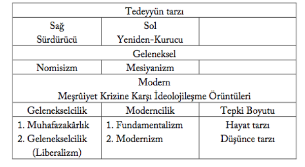
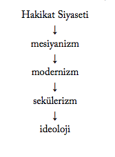

Yeni Osmanlıların38 Tanzimat düzenine muhalif bir konuma geçmelerinin çeşitli sebepleri sıralanabilirdi. Birincisi, E. Shils (1966: 356)’in Islâm dünyasındaki aydınların muhalefet sebepleriyle ilgili genel gözlemlerine uyan bir şekilde, kişisel olarak, Tanzimat sürecinde bürokratik kariyer imkânlarından umdukları oranda yararlanamamışlardı. İkincisi, Namık Kemal gibi kişiler için geleneksel üst sınıf, havas değerlerinin bir kısmı artık cazibesini kaybetmişti. Üçüncüsü, Tanzimat’ın ikinci kuşak seçkinlerine nisbetle Batı kültürüne daha hâkimdiler. Ve dördüncü olarak en önemlisi de bürokrat-aydınlar arasında modernleşme sürecinde ortaya çıkan züppelik ve halka yabancılaşmaya tepki duyuyorlardı (Mardin 1991: 57-60).
38 “Yeni Osmanlılar, Genç Osmanlılar, Genç Türkiye” vs. gibi karmaşık bir şekilde kullanılan farklı deyimlerin kökenleri hakkında, Davison 1963: 172-5.
Yeni Osmanlıların bu muhalefetiyle, günümüze kadar sürecek olan yabancılaşmış, taklitçi aydın ile özüne bağlı, yerli aydın arasındaki çatışma sürecinin başladığı söylenebilir.39Siyasî otoriteye muhalefet, Osmanlı-Islâm geleneğine yabancı olduğu için Yeni Osmanlıların muhalefeti, bizzat sultan ve siyasî rejim yerine iktidardaki rakip seçkinlere yönelmişti. Osmanlı muhalefet ve darbeler tarihi trendinin de gösterdiği gibi, siyasî otoriteye yönelik muhalefet hareketleri, doğrudan temsil ettiği makama olmaktan çok kişisel iktidara yöneliktir. Nitekim Mustafa Fâzıl Paşa da daha sonra Abdülaziz ile uzlaşma yoluna giderek Yeni Osmanlıları yüz üstü bırakmıştır. Diğer taraftan onların Tanzimat statükosuna muhalefetleri, basitçe sınıfsal ya da bireysel bir çıkar arayışından kaynaklanmış olarak da görülemezdi. E. Shils (1966: 348, 356)’in de belirttiği gibi belli konjonktürlerde bir heyet ve ferdin çıkar ve talepleri, tüm toplumunkilerle pekâlâ örtüşebilirdi.
39 Gelişmekte olan ülkelerde genel olarak populism kavramıyla ifade edilen, aydınlardaki bu halka bağlılık psikolojisinin analizi için, Shils 1966: 351-53
XIX. yüzyıl Islâm dünyasının içinde bulunduğu durumun acili-yeti alışılagelmiş formasyonlara meydan okuduğu için, ister istemez her aydın sınıfında istisnaları öne çıkararak konjonktürel bir işbirliğine zemin hazırladı. Ahmed Cevdet, Ali Süavi ve Muham-med Abduh ulemâ, Namık Kemal, üdebâ heyetinin istisnası olarak öne çıktılar. E. Shils (1966: 358), islâm dünyasındaki geleneksel aydınlara ilişkin tespitlerinde sık sık Afgânî ve Abduh’u istisna olarak zikreder. Osmanlı’da tekke, zaten ulemâ ile üdebâ arasındaki potansiyel işbirliği için ortak kanalı oluşturuyordu. Modern dönemde zirveye çıkan medrese/mektep dikotomisi, aslında ulemâ ile üdebânın hükümet görevlisi ilmiye ve kalemiye olarak meslekî bakışlarındaki ihtilâfın bir izdüşümüydü. Oysa Osmanlı gibi Müslüman imparatorluklarda bir elmanın iki yüzünü temsil eden ulemâ ve meşayih ile üdebâ, edep idealinde buluşuyorlardı. Edep idealinin asıl temsilcisi olan, özellikle Mevlevî meşayihin tekkesi, zamanla birbirlerinden uzaklaşabilen medrese ile mektebin mensupları ulemâ ile üdebâyı buluşturuyordu; özellikle XIX. asırda Murad Molla tekkesi, bu bakımdan hayatî bir işlev görmüştü.
Ortak bir kültürel zemin olarak tekke, müntesiplerine bir topluma yön veren ideal, değer ve normları aktarabiliyor, bu ortak vizyon sayesinde zaman zaman ulemâ, meşayih ve üdebâ, birbirlerinin temel işlevlerini ikame edebiliyorlardı. Diyebiliriz ki tekkede üde-bâ, siyasî muhalefet amacıyla savunacağı islâmî ideallerini ulemâdan, ulemâ ise eleştirel söylemini, partizan tutumunu üdebâdan ödünç aldı. Modern dönemde ulemâ, islâm’ı savunmak için gerekli modernlik bilgisi ve eleştirel söylemden mahrumdu; buna karşılık Namık Kemal gibi üdebâ, sahip oldukları modernlik bilgisi ve eleştirel söylemi, tekkeden aldıkları islâmî ideallerle tamamlayarak islâm’ı savunma imkânına sahipti. Buna karşılık Ezher’in kapılarını tasavvufa kapatmasıyla bu imkândan mahrum kalan Mısır’da islâm’ı savunma, ancak Abduh gibi istisnâî âlimlerin himmetine kalmıştı.
Formel olarak farklı meslekleri tutan ulemâ ile üdebânın tekkede paylaştığı ortak düşünüş tarzı, aslında sosyal arkaplanlarına bağlı ortak bir duyuş tarzına, meşrep ve ideale dayanıyordu. Örneğin Namık Kemal’in âlim Ahmed Cevdet’e sempatisine karşılık, gene bir âlim olan, Yeni Osmanlılar hareketinden arkadaşı Ali Süavi ile aralarındaki entelektüel ihtilâfın temelinde bu meşrep ihtilâfı yatıyordu. Zira Ahmed Cevdet, geleneksel topluma yukarıdan bağlı iken Ahmed Midhat ona aşağıdan bağlı idi (Mardin 1991: 61). Ahmed Cevdet’in zıddına halka daha yakın alt-tabaka ulemâya mensup Ali Süavi, büyük ümitlerle katıldığı Yeni Osmanlı hareketinde, sosyal arkaplanından kaynaklanan meşrep ve fikir ihtilâfından dolayı tutunamamıştı. Keza Namık Kemal, “büyük ve küçük gelenek” denen kültürün “yatay-yerel ile dikey-evrensel” boyutları arasındaki farklılıktan kaynaklanan görüş ihtilâflarına rağmen Ahmed Midhat ile ancak toplumun seferberliği ortak amacında buluşmuştu.
C. Fıkıhtan Sosyolojiye
Modernleşmenin, meşrûiyet kriziyle birlikte ortaya çıkardığı islâm’ ın yeniden yorumlanması ihtiyacının, ulemâ yerine üdebâyı misyona çağırdığını gördük. Dahası bu ihtiyaç, Batı’da olduğu gibi üde-bâyı sosyologa dönüşmeye zorlayacaktı. Bu dönüşüm, tarihi, iman/ şüphe, dogmatizm/septisizm, gelenek/modernlik şeklinde diyalektik bir gelişimle karakterize olarak görmekle daha iyi anlaşılabilirdi. Geleneksel olarak imanın hâkim olduğu bir dünyada ruhban veya ulemânın işi, öğretmekti. Ortaçağlarda dünyayı anlamlandırmaya yarayan ana bilgi türü Batı’da teoloji, islâm’da fıkıhtı. imanın sarsıldığı dünyayı eleştirmek ise edebiyat ve üdebâya düştü. Eleştirmenin negatif ve pozitif çift-yönlü bir işlevi vardı. Negatif işlevi, yanlışını göstererek eskiyi yıkmak, pozitif işlevi ise onu dönüştürmekti. Yeniden-öğretmek için teo-lojiyi dönüştürerek yerini alacak yeni bir disipline, -loji’ye ihtiyaç doğdu ve Destutt de Tracy sayesinde ideo-loji icat olundu (Kennedy 1978).
Ancak objektif ve evrensel bilgiyi sağlamak üzere teolojinin yerini alması hedeflenen ideoloji de kısa bir süre sonra teoloji gibi çoğul hale gelerek amacından saptı. ideolojiler, çok geçmeden nor-matif-karakterli politik küreyi dönüştürmeyi, Marksist terimle üstyapısal bir dönüşümü hedefleyen entelektüel silahlar haline geldi. Machiavelli’den itibaren dinden ayrışan politik küreye karşılık olarak vücuda gelen sosyalizm, anarşizm gibi ideolojilerin hedefi, radikal siyaset yoluyla, normatif ve devrimci bir tarzda toplumu dönüştürmekti. Ancak Fransız Devrimi saf politik bir devrimin özlenen dünyayı kurmaya yetmeyeceğini göstermiş, XIX. asırdaki Sanayi Devrimi gerçek dönüşümün mecrasına işaret etmişti.
Böylece Fransa ve ingiltere’de gerçekleşen siyasî ve ekonomik devrimlerden sonra XIX. yüzyılda rayından çıkan dünya için “sert” ve “yumuşak” olarak adlandırabileceğimiz başlıca iki bilgi ve dönüştürme tarzı ortaya çıktı. İdeoloji yoluyla devrime karşılık sosyoloji yoluyla reform. Burada, hem ideolojiyle kafiye, hem de söz tasarrufu sağlamak için sosyolojiyi, ana sosyal bilim şeklindeki orijinal anlamıyla kullandığımızı belirtelim. XX. yüzyılda “sosyal bilim dallarından bir dal” olarak anlam daralmasına uğrayan sosyoloji, doğduğu XIX. asırda, isim babası A. Comte’nin kullandığı şekilde sosyal teori ve bilimi kuşatıcı, genel bir anlama sahipti.
Katolik Fransa’da teo-loji’ye rakip olarak ideo-loji yerine bir başka -loji, sosyo-loji böylece doğdu. Rasyonalizm bakımından iki -loji, teoloji ile sosyoloji arasındaki akrabalığa çağımızda E. Troeltsch (1958: 20) ve S. Toulmin (1992) gibi bilginler dikkat çekmiştir. Disiplinin isim babası Comte’un hedefi bir tür sosyolojik Katoliklikti; hatta Amerika örneğinde sosyolojinin mi Hıristiyanlığa, Hıristiyanlığın mı sosyolojiye izafe edileceği tereddüdü yaşandı (Ro-bertson 1970: 196, Henking 1993). XIX. asırda Sanayi Devrimi sonucunda normatif ağırlıklı siyasal dünya, kendine özgü dinamiklerle işleyen sosyal (ekonomik) dünyaya, kısaca polis, toplum’a dönüşmüştü. Bu dönüşüme paralel olarak da Saint-Simon ile siyasaldan sosyal bilime geçiş gerçekleşti (Wokler 1987).
Sosyolojinin hedefi, Marksist terimle toplumun altyapısını oluşturan sosyal-ekonomik’i açıklayarak “yumuşak” bir şekilde dönüştürmekti. Ancak Marksizm, bir anlamda ideoloji ile sosyoloji arasındaki “tire”yi oluşturuyordu. Güçlü din ve ideoloji eleştirisine dayalı olarak kapitalist toplumun titiz bir açıklamasını sunan Marks’ın öğretisi, bilimsel geçerliğe sahip yegâne sosyoloji olarak belirdi. Ancak Marksizm, radikal mantığından ötürü “iki ucu keskin bir kılıç” gibiydi. Mevcut, kapitalist toplumu açıklama kapasitesinin yüksekliğine rağmen devrimci ve teleolojik mantığı, paradoksal bir şekilde onun, XX. yüzyılda Lenin tarafından evrensel-yönelişli bir ideolojiye dönüştürülmesine yol açtı.
Bu epistemolojik dönüşüm doğal olarak bilginin öznelerini de etkiledi. Geleneksel dünyada teoloji, ruhban, edebiyat ise üdebâ tarafından taşınıyordu. Raymond Aron’un The Opium of the Intellectu-als tanımlamasından da anlaşılacağı gibi ideolojiler ise aydın (intel-lectual) denen yeni bir bilgi öznesi ortaya çıkardı. ingilizce intellec-tual, Türkçesiyle entelektüelin karşılığı olarak kullanılan aydın veya Osmanlıcasıyla münevver kelimelerinin anlamları, ideolojinin teolojiyi ikame iddiasını yansıtmaktadır. ingilizcede “ilim ve öğrenim (learning, scholarship)” anlamına gelen (Skeat 1974: 113), adeta aydınlık ile özdeşleşen ruhban (clergy), kaderin cilvesi, Aydınlanma ile tam aksine yobazlık (obscurantism) ithamına uğrayacaktı. Ray-mond Aron’un tanımlamasından anlaşılacağı gibi, ideolojiler ile birlikte aydınların da kötü nam kazanması üzerine toplumsal rehberlik tahtına sosyologlar oturdu. Aydınlanma üdebâsı tarafından iyice eleştirilen dünyanın nasıl yeniden kurulacağını öğretmek, ne teologa, ne ideologa, artık sosyologa düşecekti.
islâm’da ulemâ, Batı’daki bu ne geleneksel, ne de modern aydına tekabül ediyordu. Ancak ulemâ, Batısıyla Doğusuyla kökten değişen bir dünyada sonunda aynı akıbete uğradığı ruhban gibi işlevsiz kaldı. Genel olarak ulemâ, makro-sosyolojik ve mikro-meslekî sebeplerle artık değişen dünyayı kavrama ve yönetme kabiliyetini kaybetti. Çünkü karşısında nitel olarak farklı bir dünya vardı. Ulemânın yaşadığı geleneksel ile modern dünya arasındaki muazzam fark, muhakeme metotlarının mukayesesinden anlaşılabilirdi. Geleneksel dünyaya özgü Aristocu tümdengelim mantığına göre yetişen ulemâ, Mecelle’deki 99 küllî kaidede özetlenen tümel prensipleri tikel vakalara uygulayarak sorunları çözmeye alışmıştı. Hâlbuki şimdi karşısında tümel prensiplere göre anlamlandırıla-mayacak, olgulara parçalanmış bir dünya vardı; artık, Emile Durk-heim’ın sosyolojizminde olduğu tümevarım mantığıyla vakalardan genel kuralları çıkarmak gerekiyordu ki bu ulemâya oldukça yabancı bir şeydi.
Bu durumda ya ulemâ, kabuk değiştirmeye veya kabuğunu kırmaya zorlanacak veya alternatif bilgi özneleri, Müslüman aydın veya ideolog ve sosyologa geçici olarak rehberlik makamını bırakacaktı. Tabiatıyla şematik bir şekilde yürümeyen tarihte bunların ikisi de oldu. islâm açısından olumlu ve olumsuz anlamda kabuğunu kıran istisnaî âlimler çıktığı gibi, onların yerine ideolog ve sosyolog işlevi görecek Yeni Osmanlılar denen aydın grubu da doğdu. XIX. asırda zirveye çıkan modernleşmenin işlevsiz bıraktığı ulemânın sahneden çekilişiyle doğan boşluğu doldurma sırası üdebâya gelmişti; fıkıh’tan sosyoloji’ye geçerek modern dünyayla hesaplaşmak, Namık Kemal ile öne çıkan Yeni Osmanlıların uhdesine düştü.
Batı’da kabaca 1500—1900 yılları arasında uzun bir süreçte gerçekleşen teolojiden sosyolojiye dönüşüm, XIX. asırda Batı’nın darbesine maruz kalan Osmanlı gibi Doğulu ülkelerde daha kısa bir sürede gerçekleşmek zorunda kalacaktı. Bu dönüşüm, ancak sosyolojinin kaynaklarına inmek suretiyle kavranabilirdi ki bu kaynaklar bizim tespitlerimize göre dokuzdu. Bunlar, “hukuk, siyaset, edebiyat, tarih, felsefe, teoloji, tıp” gibi geleneksel disiplinler yanında, “ekonomi ve gazetecilik” gibi nisbeten yeni disiplinleri de kapsıyordu. Namık Kemal, hemen hemen bütün bu alanları kapsayan zengin formasyonuyla Osmanlı’nın ötesinde bütün islâm dünyasında fıkıhtan sosyolojiye geçişin öncüsü oldu.
Sosyal ilişkileri düzenlemeyi hedefleyen hukuk, islâm’daki adıyla fıkıh, tabiatıyla sosyolojinin temelini oluşturuyordu ki bu yüzden “en eski sosyal bilim” olarak adlandırılmıştır (Murphy 1997). Çin, islâm veya ingiliz gibi bütün geleneksel hukuk sistemlerini kapsayan müşterek hukukun mantığı, geleneksel dünyagörüşünü yansıtıyordu. Dünyayı kuracak mutlak bir bilgi-yasa kaynağına şiddetli ihtiyaç içindeki modern dünyagörüşü, ideal ile reel, normatif ile olgusal dikotomisiyle karakterizeydi. Geleneksel dünyagörüşünü karakterize eden müşterek hukuk ise, tümelden tikele, normatiften pozitife giderek bunları uzlaştırıyordu. Pozitif hukuk veya fıkıh, tabiî hukuk veya şeriatı beşerî realiteye uyarlamaya, normatif ile pozitifi uzlaştırmaya çalışarak sosyal kural veya yasaların keşfini hedefliyordu. Geleneksel dünyaya özgü Aristocu tümdengelim mantığına göre yetişen kadı, Mecelle’deki 99 küllî kaidede özetlenen tümel prensipleri sonsuz çeşitlilik gösteren tikel vakalara uygulayarak sorunları çözerdi. Tabiî hukuk denen şey aslında bu evrensel kaidelerdi, pozitif hukuk ise bunların tikel vakalara uygulanması yoluyla problem-çözmeden doğan şeydi.
Mecelle’den önce bu konuda ilk teşebbüs, Yeni Osmanlıların âlim mensubu Ali Süavi’den gelmişti. Süavi, ilm-i hilâf denen mukayeseli fıkıh disiplini çerçevesine giren ve Mecelle’nin de temel kaynağını oluşturan ibni Nüceym’in el-Eşbâh ve’n-Nezâir adlı eserinin birinci disiplinini oluşturan kaideler kısmını, Arabî İbare Usûlül-Fıkh Tercümesi başlığıyla Osmanlıcaya tercüme ederek 1868’de Londra’da önce Muhbir gazetesinde, sonra da ayrıca broşür halinde yayınlamıştı. Eserin mukaddimesinde Süavi, islâm şeriatının çağdaş sosyal ve siyasal meselelere çözüm bulmaktan aciz olduğu vehmi karşısında şer’î hükümlerin arkasındaki ilkeleri içeren böyle bir kitap telifine karar verdiğini belirtir.
Bu kitapla ortaya çıkacaktır ki, der Süavi, bu tevehhümle şeriata karşı çıkmaya kalkışan her kimse, siyasette ilâhî sınırlardan zulüm ve modernliğin türlerine geçmiş olur. Fıkıh denen islâm hukuku, yerel şart ve adetleri, zamanın icaplarını gözettiğinden sosyal ihtiyaçlara cevap veremediği iddiası yersiz kalır. Böylelikle onun bu yayından amacı, fıkıh usûlünün modern çağda siyasal ve sosyal bilimlerin gördüğü işlevi görebileceğini göstermekti ki ona bu teşebbüsü ilham eden Tunuslu Hayreddîn idi (Çelik 1994: 513). Daha sonra bu, II. Meşrûtiyet döneminde Ziya Gökalp-ismail Hakkı izmirli işbirliğiyle “içtimâî usûl-i fıkıh” adıyla bilinen arayışa dönüşecekti (Şentürk 1996).
Asırlardır kadılar tarafından sosyal olaylara uygulanan Mecel-le’nin topladığı fıkhî küllî kaidelerin tatbik menzili, şimdi Namık Kemal (2005: 40, 421-3)’in elinde tüm sosyal’i kapsayacak şekilde genişliyordu. Kemal, bu külli kaideleri, bir sosyal bilimci yaklaşımıyla sosyal olayların analizine yarayacak sosyal yasalar olarak kullanır. O, aslında gerçekliği olmasa da yürürlükte olan kamu hukukuna kerhen uymak zorunda olduklarını belirttikten sonra Mecelle’ ye atıfta bulunur. Ona göre Mecelle’nin girişinde toplanmış yüz kadar küllî kaide, içtihat aracı olmanın ötesinde bugün akıl için de metodolojik kılavuzluk işlevi görebilir. Ve hiç olmazsa yasama işine pozitif kânun olan Düsturdan daha fazla hizmet eder.
Burada onun yasamadan kastı, sosyal yasaların koyulmasıdır. Daha sonra “Tevehhüme itibar yoktur; Zarar ve mukâbele bi’z-zarar yoktur; Sakıt olan şey avdet etmez; Zarar izale olunur; Hâcet umumî olsun, hususi olsun zaruret menzilesine tenzil olunur” kai-deleriyle Matbuat Nizamnamesini eleştirir. Gene ona göre “Zamanların değişmesiyle hükümler de değişebilir” fıkıh kaidesi hükmünce dünyanın her yerinde görülen modern gelişmeleri takip zorunluluğundan dolayı geçmişe dönüş veya duraklama caiz değildir.
Edebiyat, fıkıhtan sonra sosyal bilimin ana kaynağı olarak görülebilirdi. Geleneksel dünyagörüşüne göre hepsi bir “işaretler toplamı beden”i temsil eden makro-kozmos tabiat veya mikro-kozmos insan veya gene bir insanı temsil eden toplum, bir “metin gibi” okunabilirdi (Tafsilat, Otten 1995). Nitekim geleneksel dünyada edeb/decorum, hem literal, hem sosyal bir estetik, hem literal yazıda, hem insan davranışlarında güzel ifade tarzı anlamına geliyordu.
Buna göre edebiyat yardımıyla toplumu okumak veya anlamak, normatif ile pozitifin etkileşiminde toplumsal ilişki örüntülerini keşfetmeye yarıyordu. Bu gerçek, postmodern çağda Kenneth Bur-ke ve onun izinde Richard H. Brown (1992) gibi sosyal teoristler tarafından yeniden keşfedilmiştir.
Batı’da ortaçağlar üniversitelerinde klasik yedi hür disipline dayalı eğitim programında dünyayı anlamlandırmaya yarayan temel disiplin olarak teoloji, medreselerdeki fıkıh gibi retorik ile içiçe geçmişti. Ancak Rönesans ile bir ayrışma başladı; respublica Chris-tiana (Hıristiyan cumhuriyeti)ya karşı respublica litteraria (edebî cumhuriyet) ortaya çıktı. Kabaca 1500—1800 döneminde teolojiye rakip hale gelen edebiyat, aslında aydınlar arasında yazılı iletişim türünü ifade ediyordu; “the republic of letters” (mektuplar cumhuriyeti) deyiminden de anlaşılacağı gibi. Bu, Avrupa’da ruhban (clergy) ve bilgin (erudite) dışında kalan bütün aydınlar arasında risale veya mektuplar yoluyla hümanizm ruhunca eleştirel hür düşünce alışverişiyle oluşan bir hayalî cemaati ifade ediyordu (Goodman 1994, Lambe 1988).
Böylece Batı’da XVI. ve XVII. yüzyıllarda ticarî kapitalizm ve burjuvaziyle gelişen kamusal alanda, ruhbana karşı toplumsal eleştiri misyonunu üstlenen bir üdebâ sınıfı ortaya çıktı. Fransa, ingiltere veya Almanya’da, Rousseau, Voltaire, Diderot gibi Katolik teoloji ve geleneği eleştiren Aydınlanma düşünürleri, Fransızcada philosophes (filozoflar) adlandırılsalar da aslında teknik anlamda filozoftan çok üdebâ idiler. XVIII. den XIX. yüzyıla üdebânın yaptığı yoğun toplumsal eleştiri sayesinde edebiyattan sosyolojiye geçiş, çağımızda sözgelimi Keener (1983) ve Lepenies (1988) gibi araştırmacıların çalışmalarıyla ortaya koyulmuştur.
Osmanlı’da da XIX. asırda bir yandan yazılı metinlere özgü edeb-iyat, öte yandan sosyoloji anlamında içtimaiyat disiplinine ayrışan edeb,40ahlakî kurallar bilgisine indirgenmiştir. Klasik üdebâ formasyonuna sahip Namık Kemal (2005: 321—2, 497) de toplumsal analiz ve eleştiri için sık sık “emsâl-i edebiyedendir ki…” diyerek Sa’dî Şîrâzî’ye ait Bostan ve Gülistan ve Mevlana’ya ait Mesnevî gibi eserlerde geçen edebî anlatılara atıf yapar. O, seçkin bir edip olarak XIX. asır Osmanlı dünyasında sosyal bilimsel formasyona en yakın adaydı. Nitekim Ahmed Midhat, son eseri Osmanlı Tari-hi’nin 1888 başında yayınlanması münasebetiyle yazdığı bir yazıda Kemal’i “yeni kalem sahiplerinin öncüsü ve entelektüel ilerleme bakımından da herkesin rehberi” olarak tanımlar (Tansel 1967: IV/509). Onun parlak entelektüel gelişim çabasının arkasında yanlış dünyayı değiştirmeye yönelik idealizm ve aktivizm yatıyordu.
40 Edep kavramının çeşitli anlamlarıyla ilgili bak, Gencer 2004b: 79. Batı’da literature olarak karşılanan edebiyat, edeb kök kelimesine, Osmanlıcada Batı dillerinde bilim dallarını ifade için kullanılan —logyye tekabül eden -iyyât eklenerek XIX. asırda Tanzimat döneminde uydurulmuştur.
M. C. Kuntay (1944: III/542)’a göre Kemal, “yaşamayı çok seven bir burjuva ihtilalci idi.” Onun yaşamaktan anlamı, çok yazmak, çok okumak ve siyasî sisteme karşı eylemdi. O, kitaba, öğrenmeye, bilgiye âşık, otodidakt bir dahiydi; Ziya Gökalp (1973: 172)’ in de vurguladığı gibi. Mektuplarından birinde 3000 cilt kitabı olduğundan bahseder ki bu, o zaman bir şahıs kütüphanesi için olağanüstü bir rakamı ifade eder (Tansel 1967: III/342). 1857-58’ de henüz on yedi yaşında iken istanbul’a gelen Kemal, önce Gümrükler Tercüme Odası’na, daha sonra da Babıâli Tercüme Odası’na girdi. O zaman için Tercüme Odası, bir devlet dâiresinin ötesinde adeta Batılı fikir hayatına açılan bir kanal, entelektüel kulüp işlevi görüyordu. Önceleri teknik ve askerî konularla sınırlı tercüme hareketi, bilahare 1859’da yayınlanan Münif Paşa’nın Fransız üdebâ-sından yaptığı tercümelerle kültürel alanlara uzandı (Mardin 1996:
317).
Namık Kemal’in burada çalışması entelektüel ufkunu açtı; ona hem merak ettiği konuları kendi kendine metotlu bir şekilde öğrenme ve düşünme, hem de rahatça yazıya dökerek ifade kabiliyetini kazandırdı (Tanpınar 1988: 353). Dahası o, son tahlilde bir edip olarak haddini biliyordu. Kemal (2005: 222), birçok yerde ulemâyı eleştirir; ancak eleştirdiği, misyonunun hakkını veremeyen çöküş dönemi ulemâsıdır. Hakikatte o, üdebâ olarak nihaî anlamda ulemâya alternatif olamayacaklarını, onların yerlerini dolduramayacaklarını biliyordu. ilimlerin tasnifiyle ilgili iddialı bir eser tasarlayan Ebüzziya Tevfik’i uyarmak için yazdığı bir mektubunda, kendilerinin olsa olsa üdebâ veya daha doğrusu “hurde-furûş” olduklarını söyler. Kendilerinin Sokrates gibi bir hakîm (filozof), Rousseau gibi bir edip olabileceklerini söyleyen Kemal, ancak ibni Sînâ, Seyyid Cürcânî, ibni Kemal, Humboldt gibi âlimlerden geçinmeye kalkıştıkları takdirde hadlerini aşarak Ahmed Midhat, Ali Süavi gibi şarlatan konumuna düşecekleri uyarısında bulunur (Tansel 1967: I/415). Ona göre hadlerini aşan bir ilmî eserle ortaya çıktıklarında Vidinli Tevfik Bey, Cevdet Paşa gibi bir âlim çıkarak itiraz ettiği takdirde onlara kim cevap verebilecektir?
Böylece zımnen Kemal (2005: 213, 373), kendileri gibi üdebâ-nın hakikî ulemânın boşluğunu ancak geçici olarak doldurabileceklerini itiraf eder. Onun filozof olarak tanımladığı Sokrates’ten Ro-usseau gibi Aydınlanma aydınlarını edip olarak ayırması anlamlıdır; zira bu, kendi işlevlerine bakışı hakkında da fikir verir. O, bir vergi, maliye uzmanından bahsederken olduğu gibi birçok yerde edip ve çoğulu üdebâ’yı “sosyal bilimci” anlamında kullanır. Tercüme Oda-sı’ndaki mesai döneminden itibaren Batılı sosyal düşünceyle ülfet kuran Kemal (2005: 127), hep metodolojik bir yaklaşımla sosyal olguları analiz etmeye çalışır. Nitekim 1930’da yayınlanan eserinde Ali Ekrem Bolayır da onu, “garba müteallik içtimai ilimlerde âlim” olarak görmektedir (Aktaran, Sayar 2000: 334).
Aristo, bir metin olarak görülen topluma uygulanan retoriğin babası olduğu gibi, “şehir bilimi” anlamında politikanın da babası idi. Bir disiplin olarak politika, bu bakımdan edebin uzantısı olarak görülebilirdi. Aristo’nun siyasal ilkeleri, bir yandan idealist Efla-tun’a göre daha görgül, öte yandan kuvvetli bir ahlakî-değersel bakışa dayanıyordu; amaç, insan tabiatı uyarınca olan ile olması gerekeni optimal bir şekilde uzlaştırmaktı. Fıkha göre evrensel bilgiye daha yakın “edeb/ahlak” geleneğinden gelen Yeni Osmanlılar, eleştirel bir siyasî düşünce açısından da ulemâya göre daha avantajlıydı.
islâm ve Osmanlı dünyasında, Yunan felsefesinin aktarıldığı Abbâsî döneminden, kabaca 1000 yılından itibaren, başta ibni Miskeveyh’in Tehzîbul-Ahlâk’ı olmak üzere, Osmanlı dünyasında ünlü Ahlâk-ı Alâî gibi, siyaseti de içeren ahlak konusunda yazılan eserlerin çoğu, hikmet esprisince Aristo ile mütemayiz kadim Akdeniz/Yunan kültürüne dayalı evrensel/aklî ile islâmî ilke ve normları mezcetmiştir. ibni Miskeveyh’in Tehzîbü’l-Ahlâk’ını esas alan Nasîreddîn Tûsî’nin Ahlâk-ı Nasîrî adlı eseri, Yakın Doğu’da olduğu kadar Osmanlı’da da sosyo-politik felsefenin standart ifadesini oluşturdu. Yalnız Tûsî’nin eseri, Osmanlı dünyasında Celâleddîn Devvânî’nin Ahlâk-ı Celâlî ve özellikle Kınalı-zâde Ali Çelebî’nin Ahlâk-ı Alâî adlı eserleri vasıtasıyla tutulmuştur. Buna Ahlâk-ı Kâ-şifîyi de eklersek Osmanlı ahlak felsefesinin temelini oluşturan dört kitaba ulaşmış oluruz.
Eski çağlarda bütünsel bir ahlakî/hukukî düstura göre işleyen saf şehirlerden orta ve yakın çağlarda Yakın Doğu’da Roma ve Sa-sanî gibi imparatorluklara geçişle siyaset de az-çok özerk hale gelmiştir. Böylece, yeme-içme, uyuma, konuşma, ibadet gibi insan hayatına ilişkin çeşitli eylemlerin olduğu gibi, özerkleşen siyasî alanın da kendine özgü bir âdâbı, kurallar manzumesi oluşmuştur; genel edeb/âdâba dair olanların yanında, özel âdâbül-mülûk vel-vüzerâ eserlerinde olduğu gibi ki bu siyasî âdâbı, Mevlana’nın Mes-nevî’sinde bile bulmak mümkündür. Geleneksel, emperyal dünyanın seçkin politikası anlayışı uyarınca siyaset, başına “devlet kuşu konmuş” seçkin kişilere, hükümdarlara has bir iş sayıldığı için, geleneksel Batı’da mirror for princes (şehzadeler rehberi), Osmanlı’ da ise siyasetnâme, nasihatnâame gibi adlar alan siyasî âdâb kitapları, hükümdarlık veya vezirlik adaylarına yöneltilmişti. Az-çok ahlaktan bağımsız, kendine özgü evrensel kurallara dayalı “seküler bir siyaset” anlayışı geliştiren iran kökenli siyasî âdâb kitapları, aslında Batı’da Machiavelli ile başlatılan reelpolitik kavramının da öncüsü sayılabilir. Machiavelli’nin Prensi, geleneksel âdâb perspektifinin sonu ile yeni siyasî felsefenin başlangıcını temsil eden bir geçiş eseri olarak görülebilir. Osmanlı’da özellikle ulemânın yazdığı siyaset-nâmeler ise genelde siyaseti adalet gibi ana temalara dayandıran geleneksel ahlakî söylemi sürdürmüşlerdir.
Osmanlı-Doğu’daki âdâb eserlerinin sunduğu, bu bakımdan, Batı’da olduğu gibi kurucu bir “siyasî düşünce”den çok yöneticilere özgü, pragmatik-yönelişli bir “siyasî kültür”dür. Bunlar çoğunlukla siyaset erbabına yönelik pratik tavsiyelerden oluşmakla birlikte belli bir ahlakî/felsefî bakışa dayanıyordu. IX. asrın başlarından itibaren yazılan Arapça siyasetnâmeler, özellikle, imparatorlukların geliştiği, tarıma dayalı medenileşmiş bölgelere uygun, hiyerarşik bir sosyal tabakalaşma modeli, bir sosyal felsefe sunuyordu (Marlow 2002). Bu tarz eserlerin önemi, normatif olduğu kadar deskriptif olmalarından, saf normatif bir model sunmanın ötesinde aynı zamanda belli ölçüde mevcut sosyo-politik ilişkiler örüntüsünü de yansıtmalarından ileri gelmektedir. Örneğin Nasîreddîn Tûsî’nin eserinin öncekilerden farkı, ideal bir model sunmanın ötesinde aynı zamanda dönemindeki ilhanlı idarî pratiklerini de tasvire çalışmasıdır (Mardin 1996: 113). Gördüğü rağbet de muhtemelen bu gerçekçiliğinden, norm ile olguyu ustaca bağdaştırma kabiliyetinden kaynaklanıyordu.
Nitekim Osmanlı’da normatif ağırlıklı “siyasetnâme, nasihatnâ-me” türü siyasî âdâb/kültür eserleri, mevcut sistemin eleştirisine yönelik “ıslâhâtname, adaletnâme” gibi belgelerle geliştirilmişti. “Ehl-i kalem” başlığı altında toplanacak ilim ve edep adamları, bürokratlar ve bizzat sultanları kapsayan zengin bir kadro tarafından yazılan bu eserler, deskriptif ve normatifin etkileşiminde yaşadıkları toplumun analizini içeren yegâne belgelerdi. Bu bakımdan klasik dönemden Tanzimat’a Osmanlı’daki en verimli ve orijinal sayılabilecek entelektüel alan, gerek yerli, gerekse de yabancı klasiklerin yayınıyla değişim asrında yeni bir canlılık kazanan ahlakî-siyasî düşünce idi. ilk kez 1833’de basılan Ahlâk-ı Alâî, ardarda yapılan baskılarla giderek artan bir rağbet kazandı. Bu süreçte Namık Kemal (2005: 497) de varlık ve önemini keşfettiği eseri takdir etmekle birlikte fazla şeklî bulduğunu belirtmekten de geri kalmadı. Bu arkaplan bilgisi, bugün için sıradan bir Batılı klasik olarak görülebilecek, o zaman Batılı siyasî eğilimleri ilk aktaran eser olan Fene-lon (1651—1715)’un Telemaque tercümesinin (1862) niçin Tanzimat aydınları tarafından bu kadar tutulduğunu anlamayı da kolaylaştırır.
Machiavelli, Hobbes, Locke, Montesquieu, Rousseau gibi Batılı siyasî klasiklerden önce çevrilen Fenelon’un bu eseri, temsil ettiği geleneksel bakışın kendi dünyasınınkiyle örtüşmesinden dolayı Osmanlı’da revaç bulmuştu. Machiavelli ve Hobbes gibi modern devletin teorik temelini hazırlayan filozoflardan sonra gelse de eser, geleneksel dünyagörüşü uyarınca kişiselci siyaset anlayışıyla yazılmıştı. Namık Kemal (2005: 204)’in de zikrettiği, Fransa kralı XIV. Louis’nin ünlü “devlet benim” sözünde olduğu gibi, Batı’da mutla-kıyetçi monarşiler döneminde de kişiselci siyaset az-çok sürmekteydi. Fenelon, XIV. Louis’nin büyük oğlu ve varisi de Bourgogne Dükü’nün özel hocasıydı. Bu yüzden tam adıyla Sergüzeşt-i Tele-maque (Les Aventures de Telemaque, 1699) âdil bir hükümdarın tutması gereken yolu göstermek üzere yazılmış klasik “şehzadeler rehberi” türünden bir eserdi. Bu yüzden Eflatuncu geleneği izleyerek siyasî ilkeleri ahlakî ve felsefî bir temele oturtan eser, Osmanlı si-yasetnâmelerine benzetildi. Eser, aynı zamanda 1867’de Tahtâvî tarafından Arapçaya da çevrilerek yayınlandı (Mitchell 1988: 57).
Geçmiş beşerî deneyimin laboratuarını oluşturan tarih, sözde sosyal yasaların keşfini sağlayacak en önemli alanlardan biriydi. Bu açıdan Osmanlı-islâm dünyası Batı’ya göre daha avantajlıydı; zira görgül ve mukayeseli yöntemiyle tarih ve toplum felsefesini birleştirerek dünyada sosyolojiye öncülük eden ibni Haldun’a dayanıyordu. Osmanlı’da sonun başlangıcını simgeleyen Tanzimat döneminde aydınlar için ibni Haldun’un teorisinin önemi tabiatıyla daha da arttı. “ibni Haldun’un son şâkirdi” (Tanpınar 1969: 213) sayılan Ahmed Cevdet yanında Namık Kemal41 de doğrudan veya dolaylı olarak ibni Haldun’a atıfla emperyal çöküşü teşhis ederek tedavi yolları bulmaya çalıştılar. Ayrıca Kemal, son olarak yazdığı Osmanlı Tarihi ile bir tür Osmanlı tarihî sosyolojisini yapmayı hedeflemişti.
41 Rodos’tan damadına yazdığı 1885 tarihli bir mektupta, Ubeydullah Efendi’ nin kitapları arasında bulunan “ibni Haldunlar”ın nerede kaldığını soran (Tansel 1967: IV/189) Namık Kemal (1327: 97; 2005: 81, 181) çeşitli makalelerinde de ismini verdiği ibni Haldun’un görüşlerine atıf yapar.
Batı’da, toplumu açıklama işleviyle sosyolojinin çıkışında rol oynayan “felsefe, teoloji ve tıp” gibi disiplinlerin Osmanlı dünyasında doğrudan karşılığını bulmak zor olsa da “ekonomi ve gazetecilik” alanlarında Batı ile bariz bir benzerlik bulunabilirdi. Her disiplin, bir deneyim alanından, politika, ahlakî bir topluluğu simgeleyen polis (şehir)’den, toplumsal bilimler ise toplum’dan doğmuştu; “toplumsal”ın temelinde ise “ekonomik” yatıyordu. Buna göre disiplin olarak siyasal, normatif veya ideali, temelde kapitalist ekonominin, pazar ilişkilerinin belirlediği sosyal ise olgusal veya reeli simgeliyordu. Batı, mutlak bilgi kaynağını kaybettikten sonra beşerî gerçeği (real) doğruya (true) uydurma, yani meşrûlaştırma şansını da kaybetmiş, bunun üzerine aklîleştirme yoluyla gerçeği bizzat doğru katına yükseltmekten başka çaresi kalmamıştı. Sosyal bilginin amacı, artık beşerî deneyimi normatif olarak tanımlamaktan ziyade açıklamaktı. Modern dünyanın ürünü sosyal bilimlerin keşfe çalıştığı sözde sosyal yasalar, tümevarım yoluyla sosyal olay ve olgular arasındaki düzenliliklerin tespitiyle bulunacaktı. Ve Adam Smith’in ünlü tabiriyle “görünmez bir el” tarafından yönlendirilen pazar ekonomisi, “en gerçek” beşerî deneyim alanını oluşturduğundan “en kesin” bilgiyi sağlayacaktı (Tafsilat, Haakonssen 1989).
Kelime olarak “hane işletmesi” anlamına gelen ekonomi, Aristo’ nun Nicomachean Ahlakına dayanan Ahlâk-ı Alâî gibi Doğulu eserler tarafından “ilm-i tedbir-i menzil” olarak çevrilmişti. Ülkenin hane modeline göre yönetildiği Osmanlı gibi patrimonyal bir politik rejimde “hane ekonomisi”, “moral ekonomi”ye dönüşecekti. E. P. Thompson (1971) ile çıkan “moral ekonomi” kavramı, köylülerin, adaletin tecessümü refah değerine dayalı geleneksel geçim ekonomisinin sürdürülmesi talebini anlatıyordu. iskoç Aydınlanması ise ticaret kapitalizmi sayesinde yavaş yavaş özerk bir küreye dönüşen ekonominin ağırlıklı olarak politik-normatif açıdan ele alındığı “politik iktisat”a vücut verdi. XIX. asırdaki sanayi kapitalizmi ise sonunda ekonomik hayatı tamamıyla bir olgu olarak alan en pozitif ve kesin sosyal bilim olarak ekonomi’ye vücut verdi. Marks’ın teşhisiyle toplumun bünyesini belirleyen hukukî üstyapı değil, ekonomik altyapı olduğu için toplumu dönüştürecek kesin bilim, ekono-mik-temelli olacaktı.
Namık Kemal, Paris’de Emile Accolas (1820-1891)’tan ve Londra’da F. A. Fanton’dan politik iktisat tahsil etti.42Bu derslerde Kemal, Smith, Malthus, Ricardo ve J. S. Mill gibi klasik ingiliz politik ekonomistlerin eserleriyle ülfet kurdu (Sayar 2000: 32854). Geleneksel dünyagörüşüne mensup bir edip olarak sorunlara genelde politik, normatif açıdan yaklaşan Namık Kemal, Avrupa’ da bulunduğu sırada muhtemelen Marx gibi ülkenin Batı karşısında yaşadığı geri kalmışlık ve mağduriyetin temelinde ekonomik sebeplerin yattığını gördüğü içindir ki yurda dönüşünden sonra toplumsal sorunları iktisadî-malî perspektiften işlemeye ağırlık verdi; iktisadî meseleleri, geleneksel “ilm-i tedbir-i menzil” yerine, modern ekonomi ilmini ifade eden “politik ekonomi”nin karşılığı olarak kullandığı “fenn-i servet” perspektifinden ele almaya yöneldi. “Fenn-i servet” olarak adlandırdığı iktisadı, evrensel, pozitif bir bilim olarak alan Kemal (2005: 282), sorunların çözümünü bu disiplinin kurallarına uymaya bağlı görür. “Sanat ve Ticaretimiz” başlıklı yazısında ihracatta uygulanan gümrük tarifelerini eleştiren Kemal, bu konuda tecrübeye bile ihtiyaç olmadığını belirtir. Ona göre mevcut servet (iktisat) disiplininin evrensel kuralları, aksiyo-matik olması bakımından hiçbir zaman ve mekânda değişmez. Bu disipline göre bir ülkede bir gümrük vergisinin miktarının inmesi oranında onunla mükellef olan eşyanın revacı artar. Kemal, biraz daha aşağıda bundan “bilimsel kural” (kaide-i ilmiye), yani iktisat ilminin “yasaları” olarak bahseder.
42 Tansel 1967: IV/633, Mardin 1974: 22, 67. Tafsilat, Fındıkoğlu 1941.
Bir başka yazısında ise Kemal (2005: 372-82), iktisat disiplininin halka yönelik mali yükümlülüklerle ilgili empirik olarak kanıtlanmış on kuralını açıklar. Ona göre dünyada hangi ulusun durumuna bakılsa zenginlik ve mutluluğunun, bu kurallara uygunluk ve aykırılığıyla orantılı olduğu görülür. Diğer taraftan Kemal, her zaman olduğu gibi pozitif ile normatifi tamamıyla birbirinden ayırmaz. Örneğin o, iktisadın temel meselelerinden nüfusu, hem Malthus’dan mülhem bilimsel bir perspektiften, hem de Osmanlı-Türk nüfusunun artışının politik sonuçları bakımından ele aldı. Ona göre beşerî ihtiyaçları karşılayacak kaynakların artış tarzı, in-sanoğullarının çoğalma tarzıyla orantılı değildir. Ancak evrensel bir kural gibi görünen nüfus ile iktisadî kaynaklar arasındaki bu ilişkinin anlamı, Avrupa ile Osmanlı dünyalarının politik gerçeklerine göre değişir. Avrupa’da muhtemel nüfus artışından duyulan korku, tam aksine Osmanlı’da nüfus azalmasından kaynaklanır Kemal için. Osmanlı’da nüfus artış imkânlarını araştırmak için Kemal (2005: 75), “fenn-i servet ashabının rivâyetine” göre nüfusun azalmasına yol açan sebepleri on iki başlık altında toplar.
ilginç olan Kemal (2005: 136, 412)’in daha sonra İbretin tekrar yayın hayatına başlaması münasebetiyle yazdığı bir yazıda nüfus konusunda “aksiyomatik bilimler”e özgü tahliller yaptığını vurgula-masıdır: “Biz mülkümüzde teksir-i nüfusa dair ‘ulûm-ı mütearife (axiomatic sciences) hükmünde bazı kaideler beyan ettik.” Başlıca matematik ve mantığı kapsayan aksiyomatik bilimlerde öteki önermelerin dayandırıldığı, kendiliğinden doğru temel önermeye aksiyom (mütearife, belit) denir. Fizik, dahası sosyoloji gibi empirik bilimlerde ise bu aksiyomatik kesinliğe ulaşmak çok zor olsa da John Dewey’in deyimiyle insanlar-arası ilişkileri düzenleyen kurallardaki kesinlik arayışı bu zorluğu göğüsledi. ingiltere’de Adam Smith, Newton fiziğini ekonomiye uygulayarak “doğal yasa”dan kesin sosyal bilim olarak “doğal ekonomi”ye, Fransa’da ise Comte fizikten “sosyal fizik”e ulaşmayı hedefledi.
Batı’da olduğu gibi Osmanlı’da da gazetecilik, sosyolojinin doğuşunda önemli rol oynadı. Aydınlanma döneminde “filozoflar” olarak adlandırılan hür ve eleştirel düşünceli üdebânın, mektuplar ve salonlar sayesinde fikir alışverişinden doğan yeni entelektüel dünyaya “mektuplar cumhuriyeti” adı verilmişti. Aydınlar, aralarında dünyayı değiştirmek üzere ortak bir vizyonun oluşmasına yol açan özel iletişimi, daha sonra bu vizyonu yayacak bir kamusal iletişime dönüştürdüler. Mektuplar cumhuriyetine vücut veren üdebâ arasındaki özel iletişim ağı, zamanla periyodik gazete ve dergilerin neşriyle kompleks bir iletişim sistemine dönüştü. Kendilerine “insanlık fırkası” demeyi seven aydınların amacı, broşür, anonim risaleler, gazete ve dergilerde yazı, duyuru ve tartışma gibi her türlü yolla gerçekleri halka yaymak, eleştirdikleri dünyanın değişiminden yana kamuoyu oluşturmaktı (Goodman 1994). Böylece basın, hem popüler eğitim, hem de propaganda ve ikna aracı olarak işlev gördü.
Yeni Osmanlılar ve özellikle Namık Kemal’in kariyeri de tam olarak bu örüntüye uyuyordu. 1867 yılında Avrupa hayatının başlarında Paris’ten babasına yazdığı bir mektupta Kemal, haftada etrafa en az 100 mektup yazdığını söyler. Dünya çapında bir rekor sayılabilecek bu skoruyla Kemal, arkasında 10000 mektup bırakan Voltaire ile 2500 mektup yazmış Rousseau arasında yer alır (Akün 1972: VII). Onun zaten hacimli yayınlanmış mektupları (Tansel 1967, Akün 1972), bu bakımdan yazdığı toplam mektup miktarının az bir kısmını oluşturur. Diğer birçok çalışmayla birlikte estetik, entelektüel ve tarihsel değeri yüksek bu kadar mektubun 48 yıllık bir hayata nasıl sığdırılabildiği hayret sebebidir. Diğer taraftan Namık Kemal, üstadı ibrahim Şinasî ve Ahmed Midhat ile birlikte Osmanlı gazeteciliğinin “üç atlısı”nı simgeliyordu. Gazeteciliğin, sosyal bilimin gelişmesine, Batılı kadar Osmanlı dünyası için de geçerli iki katkısından söz edilebilirdi. Birincisi toplumsal problemleri teşhis ederek, tümevarımsal bir yöntemle olaylardan olgulara ve olgulardan yasalara varmayı sağlaması; ikincisi, ruhbana rakip yeni entelektüel sınıf olarak ortaya çıkan üdebâya toplumsal misyonları için meslekî- kurumsal temel sağlaması.
Cemâleddîn Afgânî ve Muhammed Abduh’un islâm moderniz-mine öncülük ettiği Mısır’da da Batı’nın kültürel tahaddîsine karşı durmak için yerli bir sosyal bilim geliştirme arayışı başladı. Bu konuda doğal olarak Osmanlı’da da olduğu gibi ilk adres, gelenek, kadim yerli kaynaklar oldu. iki aydın, başlıca felsefede ibni Sînâ’ya, sosyal teoride ise ibni Haldun’a yöneldiler. Fıkıh-tasavvuf dengesine dayalı dinamik bir islâm anlayışı geliştirmekte aciz kalan Mısır ulemâsının XIX. asırda Batı ile karşılaşması, islâm anlayışının kırılganlığını ortaya çıkardı. Bunu telafi için başvurulacak en acil çarelerden biri, sosyal teorinin geleneksel kaynağı ibni Haldun’dan faydalanmaktı. Batı ile karşılaşma Osmanlı’da Türkçe tercümesini getirirken, Mukaddime’nin Arapça aslı bile Mısır’a yabancıydı.
Muhammed Abduh, Mısır ve Arap dünyasında bu ihtiyacı ilk görenlerden biri olduğundan islâm düşüncesinin devleri Gazâlî ve ibni Haldun’u Ezher müfredatına sokmaya çalıştı.43Abduh, muhtemelen hem Osmanlıların büyük önem verdiğini, hem de Batı dünyası tarafından keşfedildiğini bildiği ibni Haldun üzerine 1878 yılında Dâru’l-’Ulûm’da ders vermiştir (Adams 1968: 41, 121). Toplumsal dönüşümde eğitime ağırlık veren Abduh’un Ezher Reformu kapsamında yenilenecek müfredata Mukaddime’yi sokmak için harcadığı çaba, pasif gelenekselci ile modern aktivist zihniyetlerin çatışmasına ilginç bir örnektir. Abduh (1980: III/177, Fazlur Rahman 1984: 64)’un “el-Ezher ve’l-Islâh” (Ezher ve Reform) başlıklı bölümün başında bu konuda şöyle der:
43 Gesink 2000. XXIX. asır Şam ulemâsının büyüklerinden Cemâleddîn Kâsı-mî (1990: 41), Gazâlî’nin İhyasını kısalttığı eserinde, 1903’te Abdurrezzâk Bîtâr ile Mısır’daki evinde ziyaret ettikleri Muhammed Abduh’un İhyâ’yı överek, kendisini, eğitimde kullanılmak üzere onu kısaltmaya teşvik ettiğini belirtir.
“Öğrenci olduğum zamandan beri kafamda bulunan Ezher’in reformuna, Seyyid Cemâleddîn’den ders aldıktan sonra dikkatimi yönelttim. Tam bu işe başladım ki yoluma taş koyuldu. Ben de uygun fırsatını kollamaya başladım; bir fırsat bulur bulmaz değerlendirmeye çalıştım. Engeller üst üste geldiği zaman bile, aldırmayarak, diğer bir fırsatı kollayarak sabrettim. Nihayet sürgünden döndükten sonra, Ezher Rektörü Muhammed Enbâbî’yi bir şeylere ikna etmeye çalıştıysam da, kabule yanaşmadı. Bir keresinde sordum: “Üstad, ibni Haldun’un Mukaddime’sinin Ezher öğretim programına alınması konusunda ne dersiniz?” Ve elimden geldiğince kendisine eserin meziyetlerini anlattım. Cevabı şu oldu: “Bu, teamüle uymaz.” Sonra laf lafı açtı, sordum: “(Ezher hocalarından) Eşmûnî ve Sabbân, öleli ne kadar oldu?” Cevap verdi. Ben de “Bunlar daha yakın ölmüşlerdir ve bir teamül söz konusu olmadığı halde eserleri okutulmaktadır.” Sustu ve konuşmaya girmedi.” 1905 yılında Ezher senatosundan istifa ettirildiğinde rektör olan Şirbinî ise, onun reform çabalarına şu sözlerle tepki göstermişti: “Atalarımızın Ezher Üniversitesi’ni kurmaktaki gayesi, Allah’a ibadet edilmesi için bir Allah’ın evi, yani cami bina etmekti. Dünyevî işler ve çağdaş bilime gelince, bunların Ezher ile hiç bir ilgisi yoktur… Bu adam, dinimizi öğrenmekte apaçık belli olan yollarımızı bozmakta ve bu yüce camiyi, bir felsefe ve edebiyat okuluna çevirmeye çalışmakta idi” (Zevâhirî 1964: 20).
Abduh (1980: III/15-22) da Namık Kemal gibi islâm dünyasının kalkınması için ekonomik-temelli bir sosyal bilimin geliştirilmesinin önemine dikkat çekmeye çalışmıştır. Bu konuda “Kelam ilimleri ve Çağdaş ilimlere Çağrı” başlıklı yazısı önemlidir. Kısaca amacı, geleneksel kelamın diyalektik ve metodolojisine dayanarak sosyal bilimsel düşünceyi geliştirmekti. ilginçtir ki o bu konuda isim vermeden, yanlışlıkla şeyhülislâm olarak bahsettiği Ahmed Cevdet’in görüşlerine atıf yapar. O zaman Müslümanlığı seçen Bavyera’da Augsburg gazetesi yazarı Vahmar Hayden(?)’ın sorularını cevaplandırma işi, Meşihat tarafından Cevdet’e havale edilmişti.
Abduh, “o miskinler, istanbul’da şeyhülislâmın bugünlerde Müslümanlığı seçen meşhur bir Alman adama yazdıklarından haberdar olmadılar mı?” dedikten sonra Ahmed Cevdet (1986 IV: 164)’in mektubundan alıntılar yapar. Cevdet, ruhbanların iznik Konseyi’ndeki teslis kararına karşı islâm inançlarının mantık kurallarına uygunluğunu vurgulayarak şöyle der: “Biz akâidimizin ilm-i mantık denen mizan ile tartılmasından ihtiraz eylemeyiz. Hesap ve hendese fenlerinin mukaddimelerinde “Kül, cüz’ünden büyüktür; bir şey kendiden başka bir şey değildir; bir şey hem vâki, hem gayri vâki olamaz” gibi münderiç olan ‘ulûm-ı mütearifeye mugâyir itikadı kabul edemeyiz. Böyle bir âyet veya bir hadis olsa onu tevil eyleriz. (…) Mi’yâr-ı Sedâd nâm risale muhtasar ve müfid olup onun bâb-ı râbi’ini mütalaa ederseniz bu sözlerimi siz de tasdik edersiniz.”
Cevdet, aynı yerde fizik biliminin sunduğu görgül delillerin asla aksiyomlar düzeyine çıkamayacağından inanca meydan okumasının mümkün olmadığını, bu yüzden “bir üçtür, üç birdir” önermesinin yanlışlığından dolayı teslis inancını reddederlerken, Hz. isa’nın babasız doğumunun imkânına inançlarını vurgular. Abduh ise, ekonomik-temelli sosyal bilimin önemini Doğu Akdeniz dünyasına has adalet dâiresi formülünü değiştirerek anlatır: “Din ancak devletle, devlet ancak otoriteyle (savle), otorite ancak kuvvetle, kuvvet ancak servetle ayakta durur; devletin ise ticaret ve sanayisi yoktur, serveti ancak halkının servetiyledir; halkın serveti ise kazanma yollarını öğrenebilmeleri için ancak aralarında ilimleri yaymakla mümkün olur.” Ancak onun, Namık Kemal’in yaptığı gibi bir ekonomik-sosyal düşünce geliştirilmesi konusundaki çabası, bu tür teşviklerin ötesine geçememiştir. Bununla birlikte o, Arap dünyasında sosyal bilimin öncüsü sayılmıştır. Örneğin A. Nabil Kho-ury (1976: 17) onu bir sosyolog/tarihçi olarak Weber ve Marx gibi teoristlerle karşılaştırır. Bu hükme katılan bazı araştırmacılar (Al-junied 2005) da Abduh’un fikirlerini sosyal bilimsel perspektiften analize çalışmıştır.
ibni Haldun’un Arap dünyasına mal olmasını sağlayan en önemli kanallardan biri de çağdaş Arap milliyetçiliğinin ideologu Sâtı’ Husrî (1880-1968)’dir. Aslında eğitimi, kültür ve idealleri açısından Osmanlı dünyasının ürünü olan Husrî, kaderin cilvesi, bilahare iki Dünya Savaşı arası dönemde Osmanlıcılıktan Arapçı-lığa geçen bir neslin önderi, Arap milliyetçiliğinin ideologu olmuştur (Cleveland 1971: X, Ülken 1979: 179). 1900 yılında istanbul’da Mülkiye’den mezun olan Husrî, Balkanlarda muallim ve kaymakam olarak çalıştıktan sonra istanbul’da önemli bir eğitim uzmanı oldu. O dönem gelecek umutlarını Osmanlı Devleti’nin mukadderatına bağlayan Sâtı’ Bey, Ziya Gökalp ile girdiği eğitim ve milliyetçilik üzerine tartışmalar ile tanındı. Ancak Birinci Dünya Savaşı’ndan sonra Osmanlıcılıktan umudunu kesen Sâtı’ Bey, Arap dünyasına geçerek Arap milliyetçiliğinin bayraktarı Sâtı’ el-Husrî haline geldi (Berkes 1975: 74).
Husrî’nin milliyetçilik tasavvuru, Alman milliyetçiliğinin mü-beşşiri Johann Gottlieb Fichte (1762-1814)’nin romantik ulus kavramına dayanıyordu (Cleveland 1971: 38, 86-7). Niyazi Berkes (1975: 94) ile yaptığı görüşmelerde Husrî, Fichte’yi tutmakla birlikte, onun teorisinin metafizik tonunun, formasyon yıllarından beri özellikle tabiî bilimlere, empirisizm ve rasyonalizme olan eğilimine uymadığını belirtir. işte ibni Haldun, onun Fichte’den mülhem romantik milliyetçilik tasavvurunu, empirik bakımdan temel-lendirecek en önemli yerli kaynak olarak belirdi. Husrî, Arap dünyası açısından bir meçhul olan Mukaddime ile istanbul’da Mülkiyedeki eğitimi sırasında tanışmıştı. ikinci Dünya Savaşı sırasında yoğun olarak onun üzerine çalışan Husrî, 1943-44 ve 1961 yıllarında, iki hacimli cilt halinde İbni Haldun’un Mukaddimesi Üzerine Araştırmaları yayınladı.
Metnin adamakıllı bir analizi ve tali uluslararası literatürün değerlendirilmesi ile Mukaddime’yi yorumlayan Husrî, çalışmasında aynı zamanda, Osmanlıların bu esere verdikleri yüksek değeri de anlatır (Tibi 1981: 112, 222). Böylece ibni Haldun’u Arap dünyasının gündemine sokan Husrî oldu.44 O, elbette ibni Haldun’un eserine etnik duyarlıktan uzak bir Osmanlı aydını, bilim adamı gözüyle bakıyordu. Ancak etnik duyarlığı güçlü Arap aydınlarının aynı vizyon genişliğini göstermesi zordu. Irak’ta 1933 ile 1939 yılları arasında Eğitim Genel Müdürü olarak çalışan fanatik Arap milliyetçisi Sami Şevket’in, Arapları aşağılayan pasajlar içerdiği gerekçesiyle ibni Haldun’un kitaplarının yakılması ve mezarının kazınması çağrısına Husrî şu sözlerle tepki göstermişti: “Bu kimse nin karşısında sessiz kalamayacağı kör bir taassuptur. Böyle bir çağrı, ne vatanseverlikle, ne de gerçek pedagojik ilkelerle bağdaşır.”45
44 Husrî’nin ibni Haldun tutkusu o derecede idi ki Haldun ismini koyduğu çocuğunun doğmasından sonra eserlerinde, ibni Haldun’u telmihen Ebû Haldun (Haldun’un babası) künyesini kullanmaya başlamıştı (Cleveland 1971: 63-4, 103).
45 Örneğin çağdaş Arap dünyasının önde gelen felsefecilerinden biri sayılan Ahmed Fuâd Ahvani, oryantalistlerin ibni Haldun’a gösterdikleri teveccühün, onun, bir tarihçi olarak meziyetlerinden çok Araplığı eleştirisinden kaynaklandığını söyleyecek kadar ileri gidebilmişti (Aktaran Lewis 1987: 57). ibni Haldun, Araplar hakkındaki olumsuz gözlemlerinden dolayı bir süre de Irak Cumhuriyeti’nde yasaklanmıştı (Cleveland 1971: 64, Lewis 1987: 79).
Abduh, Mısır ve Arap dünyasında ilk sosyal teorist sayılırsa, Sâtı’ Husrî de ulus-devletlerine özgü ilk sosyal bilimci sayılabilirdi. Bu geçiş, Osmanlı dünyasında Namık Kemal ile Ziya Gökalp arasında yaşandı. Kemal, çözülmek üzere olan bir imparatorluğun çıkardığı ilk “sosyal teorist”, Gökalp ise, doğan bir ulus-devletinin temellerini atacak ilk “sosyal bilimci” olarak tarihe geçti. Durkheim sosyolojisine dayanan Gökalp, bu geçişin tam bilincindeydi. Batı’ da sosyal bilimlere vücut veren büyük dönüşüm, dünyagörüşünde değişimle başlamıştı. Dünyagörüşünün arkasında ise fizik, Newton’ un bu alanda başlattığı dönüşümün arkasında ise Bacon’ın Aristo’ dan kopuşla başlattığı metodolojik dönüşüm yatıyordu. Bunun içindir ki böyle zincirleme, köklü bir dönüşüm için Gökalp (1973: 250), ülkenin bir yol ayırımına geldiğini vurgular. Ona göre Tanzimat aydınlarının eski ile yeni arasındaki kararsız tavrı, sorunları daha da büyütmekten başka sonuç vermediğinden özlenen atılım için tutulacak yolu netleştirmekten başka çare kalmamıştır: “Aristo’ nun istidlal mantığını bırakarak, Descartes ile Bacon’ın istikra mantığını ve bu mantıktan doğan metodolojiyi almanın dinimize ve millî kültürümüze ne zararı olabilir?”
D. Aydın Siyasetinin Doğuşu
Yukarıda Osmanlı ve Mısır’da üdebâ ve ulemânın sosyal bilimsel düşünüşe nasıl geçtiklerini gördük. Aydınların düşünüşünde meydana gelen bu kritik değişimden sonra şimdi de fikirlerini hayata geçirme tarzında meydana gelen değişimi, Mannheim’ın tabiriyle nasıl “sosyal ilişkilerin üstüne çıkarak” siyasî aktivizme yöneldiklerini görelim. Ünlü sosyolog Edward Shils (1966)’in 1960 yılında hazırladığı bir makale, bu konuda oldukça analitik bir perspektif sunmaktadır.
Asya ve Afrika’nın “azgelişmiş” ülkelerinin siyasî gelişimini büyük ölçüde aydınların eseri sayan Shils’e göre o zaman henüz “sivil siyaset”in önşartları oluşmadığı ve başka aktörler olmadığı için aydınlar, ülkelerinin siyasî gelişimlerinde temel rolü üstlenmişlerdir. XIX. yüzyılın sonlarından itibaren başlıca Hindistan ve Ortadoğu örneklerini alan Shils (1966: 345), aydınların yoğun siyasallaşmasını karmaşık bir dizi sebeple açıklar. Psikolojik açıdan bakıldığında, akrabalık, yaş, cinsiyet gibi faktörler tarafından belirlenen geleneksel statü düzeninde bireysel inisiyatif oldukça sınırlı olduğu için, eğitimli kişi, bu düzeni aşmaya yönelmekte, kazandığı nitelikler ile kendisini gösterebileceği, işlev esasına dayalı yeni bir düzen aramaktadır.
Böylece bir sınıf bilincine dayalı olarak ortak eylem duyusuna ulaşan aydınlar için siyasî hareket, eylemlerinin sonuçlarını alabilecekleri, “etkinlik ve başarı” ihtiyacını karşılayabilecekleri yegâne sosyal hareketlilik kanalını oluşturmaktadır. Bu yüzden Namık Kemal-Ali Süavi, Afgânî-Abduh örneklerinde olduğu gibi, nihaî olarak çıkar, mizaç ve ideallerindeki farklılıklara karşılık aydınlar arasında eleştiri ve muhalefet için bir uzlaşma ve dayanışma zemini bulunmakta, en azından başlangıç aşamasında ortak, organize eylem sağlanabilmektedir. Shils (1966: 340, 346—7)’in dediği gibi, onlar, hem içeriden gelen özel bir nidayla, hem de dışarıdan gelen pozitif bir saikle siyasete girdiler. Geleneksel otoritelere başkaldırı, devlet ve kilise gibi kadim yetkin kollektivitelerden kurtulma isteği, “ulus, ümmet veya ‘vatan” gibi yeni karizmatik otoritelere bağlanmaya dönüşür; aydın-âlim, yeni karizmatik otoritenin iradesine hizmet etmekle eylemlerinin anlam kazandığına inanmaya başlar. Adeta bir misyon hissiyle hareket eden aydınlar, kendilerini toplumun yegâne kılavuzu olarak görürler.46
46 Bu konuda Yeni Osmanlılardan aktarılan bir anekdot oldukça anlamlıdır. Fırtınalı bir gün Namık Kemal, Ziya, Reşad ve Nuri ile birlikte bir kayıkta Boğaz’ı geçmektedir. Reşad’ın korktuğunu gören Namık Kemal, ona ölmekten korkup korkmadığını sordu. “Ölmekten korkmuyorum” diye cevap verdi Reşad, “fakat kayık batarsa, korkuyorum ki kamuoyu da batacak” (Kuntay 1944: I/571, Davison 1963: 196).
XIX. yüzyıl islâm ülkelerini de içeren azgelişmiş ülkelerde aydınların siyasetinde üç aşama tespit eden Shils (1966: 355), birinci aşama olarak “anayasal47 liberalizm”i görmekte ve bu aşamada “hukukçular ve gazeteciler siyaseti”nin öne çıktığını belirtmektedir. Bu şemanın şaşırtıcı bir biçimde Osmanlı, Mısır ve Hindistan örneklerine uyduğu görülmektedir. Yeni Osmanlılar, mülkiye kökenli olarak tabiatıyla modern hukuk formasyonuna yatkındı. Dahası Namık Kemal, Paris ve Londra’da özel olarak hukuk ve iktisat tahsil etmişti. 1869 tarihli Maârif-i Umûmiye Nizamnamesi ürünü olan, edebiyat, hukuk ve fen dallarında yüksek tahsil verecek Dâ-rülfünûn deneyiminin 1871’de başarısızlıkla sonuçlanmasından sonra Fransızca eğitim veren Galatasaray Lisesi, 1874-5 yılında Mühendislik ile birlikte ilk kez bünyesinde bir Hukuk Fakültesi
47 Özellikle geçiş dönemine ilişkin tarihî incelemelerde “meşrûtiyet ve anaya-salcılık” terimlerinin birbirlerinin yerine karışık bir şekilde kullanıldığı görülmektedir. Oysa anayasalcılık (constitutionalism) genel bir anlam taşırken, meşrûtiyet “anayasal monarşi” anlamına gelmektedir.
açmıştı (Berkes 1978: 240).
Mısır’da ise Tahtâvî’nin Paris dönüşü 1835’te kuruluşuna öna-yak olduğu, ancak Abbas döneminde kapatılan ve 1868’de yeniden açılan Dil Okulu, 1886 yılında Fransızca hukuk eğitimi veren Kahire Hukuk Mektebi’ne dönüşerek en gözde seçkinlerin yetiştirildiği merkez haline geldi. Hindistan’da da Seyyid Ahmed Han’dan (May 1970: 37) başlayarak Müslüman aydınlar, mektepli veya alaylı, hukukçu olarak yetişmişlerdi. Aydınların hukukî eğitimleri sırasında tanıştıkları liberal anayasal fikirler, onların toplumsal projelerine oldukça uygun düşüyordu. Hukukî formasyonları dolayısıyla aynı zamanda onlar, belagat hüneri ve otoriteyle ilişki kurmada özgüven de geliştirmişlerdi.
Geleneksel olarak ulemâ ve üdebânın bürokrasinin bir parçası olduğu Osmanlı gibi organik bir toplumda K. Mannheim’in (Hee-ren 1971) deyimleriyle “serbest-dolaşan, sosyal olarak bağımsız”, yani “sosyal ilişkilerin üstüne çıkabilen” bir aydın sınıfının varlığından söz etmek zordu. Klasik dönemde yönetimi hicvetme cesareti gösteren kalemiyeden bazı divan şairlerinin sonu, darağacı olmuştu. Bu yüzden gerek Ali Süavi gibi ulemâ, gerekse de Namık Kemal gibi üdebânın yönetimi eleştirebilmeleri için memuriyet dışında bir geçim kapısı, hayat alanı bulmaları gerekiyordu. Aydınlanma dönemi Avrupa’sında “mektuplar cumhuriyeti”ni kuran aydınlarda olduğu gibi gazetecilik, Doğulu aydınlara da sosyal ilişkilerin üstüne çıkma imkânını verdi. Dolayısıyla yeni hukukçu kuşağı ile gazeteciler kuşağı içiçe geçti.
Gazetecilik, onlar için haddizatında bir ideal, profesyonel bir uğraş veya geçim kapısı değildi. Çoğu, Yeni Osmanlılar örneğinde olduğu gibi bürokrat veya hukukçu, Ali Süavi ve Muhammed Ab-duh örneklerinde olduğu gibi müderris kökenli idi; gazeteciliği esas mesleklerinden feragatle veya paralel yapıyorlardı. Geçimlerini esas meslekleri veya gazetecilikten sağlayamadıkları durumlarda, akraba ve patronlarının destekleriyle ayakta duruyorlardı. Bu noktada Mannheim’in (Heeren 1971) bir tespiti anlam kazanır. Ona göre sosyal evrimin istikametini değiştiren güçlü itkiler üdebâdan değil, onların arkasında yer alan, kutuplara ayrılmış, karşılıklı olarak mu-hasım sosyal gruplardan çıkar. Nitekim aslında Mısırlı Prens Mustafa Fâzıl Paşa’nın Mısır ve Osmanlı’daki şahsî iktidar mücadelesinin kılıfını oluşturan anayasal reform uğruna Yeni Osmanlı hareketinin sponsorluğunu yapması (Mardin 1996: 41) da bu tespite tam olarak uyar.
Bu aydınlar için gazeteciliğin maddî ve manevî çift işlevi vardı. Gazetecilik, söz konusu geçim sağlama işlevinin yanında daha önemlisi, kamuoyu oluşturma işlevi görecekti. Onlar gazeteciliğe yönelmişlerdi, çünkü kendilerine ulaşılacak ve yönetilenlerin en kaliteli olanlarının rol alabileceği anayasal hükümet idealini seslendirmede bilinç sahibi kılınacak küçük bir okuryazar kesim vardı (Shils 1966: 357). Yeni Osmanlılar, Osmanlı’da henüz faaliyete başlamadan önce Paris’de yayınladıkları programlarında savundukları temel prensipleri serdettikten sonra, “maksadın istihsâli yolunda” şiddet eylemi değil, “propaganda ve ikna usulü” ile çalışacaklarını belirtir (Karal 1988: 210). Bu tavır, “anayasalcı hareket”in “devrimci siyaset”in zıddı olarak (Shils 1966: 356) tasavvuruna uymaktadır.
Onlar, Ali Süavi’nin sonunun gösterdiği gibi, Osmanlı siyasî kültürünün devrimci bir siyasete elvermediğini bildiklerinden daha makul bir yol seçmişlerdi: basın-yayın yoluyla fikrî propaganda, anayasal değişim sürecini hızlandıracak bilinçli bir kamuoyu yaratma. Türk gazeteciliğinin babası sayılan ibrahim Şinasî’nin çıkardığı Tasvir-i Efkâr, tabiî hukuk ve anayasal düzenle ilgili Avru-paî kaynakları, birinci elden okuyucularına aktarıyordu. Namık Kemal, Eylül 1868’de Hürriyet’de yayınlanan “Usûl-i Meşveret Hakkında Mektuplar” başlıklı sekiz mektupluk makale dizisiyle Osmanlı’ya uygun anayasal bir hükümet modeli ortaya koymaya çalışmıştı. Keza Abduh (1980: III/350) da 1880’de el-Vekâ’iul-Mısriyye’de yazdığı yazıda “anayasal hükümet, şûrâ, vatan, haklar, kamuoyu” gibi kavramlar etrafında anayasalcılığın Mısır için taşıdığı meziyetleri dile getirmişti.
Medenileştirici Batı’nın Gelişi III: Yumuşak Emperyalizm
XIX. asırda medenileştirici Batı’nın iki tür gelişine islâm dünyası iki tür karşılık verdi. Birincisi, 1798’de Napoleon’un Mısır seferiyle başlayan Batılı sömürgeciliğe, sıcak savaşa karşı 1830’larda Osmanlı ve Mısır’da politik modernleşme başlatıldı. ikincisi, “islâm ve Türklük ilerlemeye mânidir” sloganına dayalı ingiliz kültür savaşına karşı ise 1860’larda Yeni Osmanlılar, 1880’lerde Mısırlı modernistler tarafından islâm’ın yeniden yorumlanmasına yol açan bir entelektüel hesaplaşmaya girişildi. Bu sıcak ve soğuk savaş, Ba-tı’nın Osmanlı-islâm dünyasına yönelik “sert etki” yolları olarak görülebilirdi. XIX. asırdan itibaren Batı’nın, aynı zamanda fiziksel gücü sayesinde kendi kültürünü islâm ve Doğu dünyasına taşıması, akültürasyonun “kültür emperyalizmi” olarak adlandırılan uç örneğini oluşturmuştur. Örneğin modern dönem Doğu-islâm dünyasına yabancı ideolojiler, temelde Batı ile kültürel temas sonucu gelmiştir.
“Kültür edinimi” anlamında akültürasyon, sosyolojide, sosyal değişme sürecinin önemli bir dinamiği olarak farklı kültürlerin temas ve etkileşimini ifade etmek için kullanılan bir terimdir. Bu, farklı kültürlerden grupların doğrudan ve sürekli bir ilişkiye geçmeleri sonucu kültür kalıplarında ortaya çıkan temel değişimleri ifade eder. Tarih boyunca savaşlar, göç, ticaret, turizm gibi çeşitli yollarla gerçekleşen kültürel yayılım ve etkileşimin dinamikleri ve derecesi hakkında uzmanlar birtakım ölçütler geliştirmişlerdir (Moore 1963: 86). “Çevresel meydan-okuma” teorisiyle açıklanan, akültürasyon sürecinin en yaygın görüldüğü alan, aktarılması en kolay teknolojik-maddî kültürdür. Ancak esas açıklama zorluğu, sosyal organizasyon, hayat tarzları, hukukî düsturlar ve hatta dinî inanç sistemleri gibi maddî olmayan kültürel sistemlerin intikalinde görülmektedir.
XIX. asırda Batılı kültürün diğer kültürler üzerindeki etkisi, manevî alanda akültürasyonun uç örneğini oluşturur. Çünkü etki-tepki diyalektiğince Batılı kültürün başka kültürlere görülmemiş yoğunlukta bir etkisi ve buna karşı aynı yoğunlukta bir içselleştirme eğilimi söz konusudur. insanlık tarihinde emsali görülmemiş bir şekilde maddî ve manevî başarılarıyla Batı’yı bir bütün olarak model alma, ona karşı koymak için düzenini kendine mal etme, somut olarak Batılılaşma denen modernleşme projesi, çağımızda akültüras-yonun ana dinamiğini oluşturmaktadır. Bu projenin gerektirdiği rakip modeli yakından tanıma ihtiyacı ise seyahat, eğitim, tercüme gibi yollarla Doğu’yu Batı’nın daha da derin “yumuşak etki”sine açmıştır.
XIX. asırdan önce islâm dünyasında Batı’ya kültürel-yönelişli bir seyahat olgusundan bahsetmek zordu. Tek-tük yapılan seyahatler, daha çok resmî, diplomatik ve dolayısıyla belli bir çevreyle sınırlı nitelikteydi (Newman 2001). Osmanlı’da da keza bu tür, erken modern dünyada Avrupa ile diplomatik ilişkilerin gelişmesine paralel olarak Yirmisekiz Çelebî Mehmed Efendi’nin Fransa Sefa-retnamesi gibi, daha çok resmî saiklerle yapılan seyahatlerle sınırlıydı (Asiltürk 2000). Ancak XIX. asırdaki ölümcül karşılaşma, çok geçmeden Avrupa ülkelerini Müslümanlar tarafından kültürel, entelektüel yönelişli seyahatlerin gözde hedefi haline getirdi.48
48 XIX. yüzyıl islâm dünyasında Batı’ya seyahatler hakkında Louca 1970, Eickelman 1990, Abu Lughod 1963: 69-75, Newman 2001, Yared 1996.
Batılılar Ortaçağlardan itibaren o zaman güçlü olan islâm ve Doğu dünyasını seyahat yoluyla keşfe çalışmıştı. Şimdi trend tersine dönmüş, hâkim Batı, yabancı seyahatlerin cazibe merkezî haline gelmişti. Dahası, zamanında egzotik Doğu gibi bir “fanteziler diyarı” olmanın ötesinde “medeniyetin kıblesi” olarak alınan Batı, kendisiyle başa çıkmak isteyen Doğulu ülkelerin aydınlarının inceleyeceği bir model, laboratuar haline gelmişti. islâm ve Doğu dünyasının Batı’nın doğrudan veya dolaylı etkisiyle girdiği modernleşme süreci, Batı ile hesaplaşmayı, bu da bizzat gözlemle onu iyice tanımayı zorunlu kılıyordu. Böylece Batı medeniyetinin gücünün sırrını öğrenme merakı, Müslümanlar arasında gerek entelektüel, gerekse de resmî amaçla giderek artan bir tempoda Batılı ülkelere gezi ve eğitim hareketine yol açtı.
Osmanlı’da 5 Nisan 1863’de Avrupa’ya seyahate giden öncü isimlerden Abdülhak Hamid’in babası Hayrullah Efendi (1818— 1866), eserinin başında bu yeni tür seyahatin gerekçesini anlatır. Ona göre mamur ve medenî ülkelerin siyasî rejimlerini tanıma gereği, küllî kaidelerdendir. Hızla gelişen basın ve yayın araçları sayesinde yaşadıkları dünyada kalkınmış nice ülkenin varlığından haberdar olan ve böylece gaflet uykusundan uyanan halk, istanbul’a belli vakitlerde gidip gelen vapurların gelip gittiği ülkelerde üretilen nice nefis malın üretildiği fabrikaları gezip görmek istemekte, ancak gidecekleri ülkelerin dil ve kültürlerini bilmediklerinden dolayı bu konuda Türkçe bir kılavuz sıkıntısı çekmektedirler. Bu konuda mevcut tek-tük seyahatnamelerin de yetersiz kaldığını gördüğünden kendisi bu boşluğu tam olarak doldurmaya niyetlenmiştir. Çünkü ona göre, medenî ülkelerle ilişki kapılarını açmış olan 36 milyon nüfuslu Osmanlı Devleti’nin dünyanın en gözde yerlerinden bir mevkide komşularının durumundan habersiz duramayacağı ve memlekette dahî Avrupa’ya seyahat etmenin giderek moda haline geleceği melhuzdur (Hayrullah Efendi 2002: 3).
XIX. asır islâm dünyasındaki bu seyahat trendi içinde en dikkat çekici olanı, doğrudan bir Osmanlı Sultanı Abdülaziz tarafından 1867’de Avrupa’ya yapılandı; zira Osmanlı tarihinde ilk kez bir sultan, askerî sefer dışında turistik bir amaçla Avrupa’ya ayak basıyordu. Bu ziyaret kararında temelde diplomatik çeşitli mülahazalar etkili olmuştu. Görünüşteki amaç, III. Napoleon’un 1867 yılındaki Paris sergisini görmekti. Esas amaç ise, o zaman Girit’teki isyanlarla Batı Avrupa başkentlerinde sarsılan Osmanlı itibarını yeniden tesis etmekti. Âlî ve Fuâd Paşaların ısrarlı teşvikleriyle alınan bu kararda, bu tür diplomatik mülahazaların yanında, Avrupa medeniyeti ve politikasını yakından görme niyeti de rol oynamıştı.
Seyahat, genel olarak bu amaçları başarmıştı. Sultan’ın Avrupa medeniyetine dair izlenimleri etkileyiciydi. Umulacağı gibi özellikle askerî-teknolojik alandaki yenilikler onu cezp etmişti. Bilhassa demiryollarına hayran kalan Abdülaziz, bunların kendi ülkesinde de inşası için atılım başlatmıştı. Seyahat esnasında Osmanlı’nın yalnızca demiryollarına değil, geniş kapsamlı kamu öğretim programlarına ihtiyacını da fark eden Sultan, gerek Avrupa dönüşü yayınladığı bir hatta, gerekse de bakanlar konseyiyle yaptığı konuşmalarda bunları dile getirmişti. Bununla birlikte Batı’nın anayasal rejiminden pek etkilenmeyen Sultan, ancak kendi emperyal konumuyla bağdaşabilecek bir genişletilmiş temsilciler şurası fikrine kaymış olabilirdi (Davison 1963: 235—9).
XIX. asırda modernleşme konusunda kafa yoran Müslüman aydınların hemen hemen hepsi önce Batı’yı ziyaret etmişlerdi. Bu yüzden islâm dünyasında bu seyahatlerin kronolojisi, bir anlamda islâm modernizminin kronolojisini de yansıtıyordu. iran, 1811 ve 1815 kadar erken tarihlerde Avrupa’ya küçük öğrenci grupları göndermiş ve iranlı öğrencilerin en azından biri Mirzâ Muhammed Sâlih Şîrâzî, seyahat gözlemlerini kitaplaştırmıştı (Polk 1968: 122, Newman 2004: 81, Atai 1992).
Ancak islâm dünyasında Batı’ya seyahat konusunda Rifâ’a Râfi’ Tahtâvî (1801—73) öncü isim olarak tanınmıştır (Silvera 1980). 1826 yılında Mehmet Ali Paşa tarafından Paris’e gönderilen ilk öğrenci misyonuna imam olarak Ezher mezunu Tahtâvi atanmıştı. Ancak Mısırlı otoritelerden diğer öğrencilerle birlikte kendisi için de tahsil izni almayı başaran Tahtâvî, Paris’teki bu beş yıllık eğitim süresini en iyi şekilde değerlendirmeye yöneldi. O zamanlar Paris’e gönderilen herhangi bir öğrenci misyonunun alabileceği en geniş liberal eğitimi alan Tahtâvî, Batılı kültür hakkında kayda değer bir birikim sağladı.
O, bu süreçte bir yandan Rousseau, Voltaire, Montesquieu ve Condillac gibi XVIII. yüzyıl Fransız filozoflarının liberal meşrûtî düşünceleriyle tanışırken, diğer yandan da Fransız toplumu ve kültürünü yakından gözledi ve izlenimlerini yazdığı eserlerle Mısır kamuoyuna aktardı. “Değişim, ilerleme, medeniyet, ulus, devlet, toplum, anayasa, yasama, hukuk devleti, genel yarar, siyasî katılım, sivil toplum, kamuoyu” gibi modern olguları, kavram veya terim olarak ilk kez onda buluruz.49O, Avrupa toplumu ve kültürünün kapsamlı bir tasvirini yapan ilk gözlemciydi; Tahlîsul-Ibrîz adındaki Paris seyahatnamesi, hem üslup, hem içerik olarak daha sonra Arap dünyasındaki benzeri çabalar için örnek oluşturdu. Avrupa dışındaki birçok ülkeyi ilk defa zikrederek vatandaşlarının içinde yaşadıkları fiziksel dünya hakkındaki vizyonlarını genişleten seyahatnamesi, bu itibarla Arap bilincinin parçası haline geldi (New-
49 Newman 2003: 9—92, Vatikiotis 1985: 109, 113, Hourani 1993: 69, AlAzmeh 1996: 401.
man 2004: 83).
Arap dünyasında Batı’ya seyahat konusunda Tahtâvî’yi izleyen öncü isim olarak Ahmed Fâris Şidyâk (1804—87)’ı görüyoruz. 1848’de oryantalistlerle birlikte Ahd-i Cedid’in Arapça versiyonunun hazırlık çalışmalarına katılmak üzere ingiltere’ye giden Şidyâk, bir süre Cambridge ve Oxford’da bulunduktan sonra 1857 yılına kadar kaldığı Paris’e geçmiş ve Avrupa medeniyetine dair gözlemlerini, 1855 yılında Paris’de yayınladığı eserinde aktarmıştır.50 Alışılagelmiş türlerin dışında, seyahatname-otobiyografi-deneme karışımı bu hacimli eserinde Şidyâk, kurmaca bir üslup içinde Doğu ile mukayeseli perspektiften Batılı yaşayış ve düşünüşün son derece duyarlı bir eleştirisini yapmıştır.
50 Ahmed Fâris Şidyâk, es-Sâq ‘ale’s-Sâç fî mâ hüve’l-Fâryâç (Paris: BenjaminDupart, 1855).
Tahtâvî’nin eseri, Arap dünyası için olduğu kadar Osmanlı dünyası için de öncüydü. 1831 baharının sonlarında Mısır’a dönüş yapan Tahtâvî, Tıp Okulu’ndaki görevini sürdürürken üzerinde çalıştığı seyahatnameyi Şeyhi Hasan Attâr’ın önsözüyle 1834’te yayınladı. Mehmed Ali’nin rağbetine mazhar olan eserin Türkçeye tercümesine karar verildi. Rüstem Besim tarafından Sefaretnâme-yi Rifâ’at Bey adıyla Türkçeye çevrilen eser 1839 yılında Bulak’ta basıldı. Tanzimat Fermanı’nın ilan edildiği 1839 yılında basılarak nüshaları istanbul’a gönderilen eser, Babıâli’nin hayli ilgisini çekti (Newman 2004: 44). Eserin içeriğiyle Tanzimat reformları arasındaki ilişki, araştırmaya değerdir.
Yukarıda adı geçen Hayrullah Efendi de öncü ve iddialı seyahatnamesinin önsözünde yazılış gerekçesini açıklarken, nadir emsal eserler arasında Tahtâvî’nin bu eseriyle, Paris Sefareti Başkâtibi Seyyid Mustafa Sâmî Efendi’nin 1838’de yayınlanan Avrupa Risa-lesi’ne atıf yapar. Hayrullah Efendi (2002: 84), Osmanlı elitizmini yansıtan bir üslupla, Paris’de aynalı bir kafeyi yanlışlıkla kalabalık olarak algıladığından dolayı “Yukarı Mısır’da bulunan Asyut adlı beldede doğup büyümüş, daha sonra Mısır’da Ezher Universite-si’nde Arapça ilimler tahsil edip Mısır ile Asyut arasındaki köy ve kasabalardan başka bir yerleri bilmeyen Şeyh Rifâ’a” diyerek Tah-tâvî’yi açıkça küçümser. Ancak ne yazık ki eseri zamanında yayınlanmadığı için etkisiz kalmıştır.
islâm dünyasında Batı’yı gezerek ve tanıyarak fikrini geliştiren Müslümanlar aydınlar arasında Tahtâvî ve Şidyâk’ın ardından Tunuslu Hayreddîn (1821—90)’i görüyoruz. Ahmed Paşa tarafından 1840’da kurulan orduya girerek burada Tunus ordusunu yetiştirmek için gelen Fransız heyetindeki subaylardan Fransızca öğrenen Hayreddîn, 1853—57 yılları arasında Tunus’u temsilen Fransa’ya gönderildi. Burada Avrupa kültürünü yakından tanıyan Hayreddîn, aynı zamanda Âlî Paşa dâhil, Osmanlı ve islâm dünyasından birçok kişiyle de tanışma fırsatı buldu.
Osmanlı Devleti’nde 5 Nisan 1863’de Avrupa’ya seyahate giden Hayrullah Efendi (1818—1866)’yi görüyoruz. Ancak seyahatnamesi zamanında yayınlanmadan kaldığı için kamusal bir etkisi olmamıştır. Bir süre sonra 1867 yılında Yeni Osmanlılar ise gönüllü bir seyahatin ötesinde, mevcut rejime muhalefetlerinden dolayı Avrupa’ya entelektüel bir “hicret” gerçekleştirmişlerdir. Dolayısıyla edebî bir seyahatnameden çok fikrî makaleleri yoluyla Avrupa hakkındaki gözlemlerini aktarmışlardır.
Hindistan’da ise Seyyid Ahmed Han (1817—1898), Batı’yı ilk elden tanıyan Müslüman aydın neslinin öncü ismi sayılabilir. Hakkındaki bütün incelemelerin vurguladığı gibi, 1869—70 yılındaki ingiltere ziyareti, onun fikrî hayatında bir dönüm noktası olmuştur. Oradaki gerek eğitim sayesinde kadınların da katıldığı Batılı sosyal hayatı, gerekse de Cambridge gibi entelektüel çevrelerdeki ziyaretleri sayesinde Batılı fikrî ortamı yakından gözlem, Ahmed Han üzerinde derin etkiler bırakmıştır (May 1970: 40).
Daha önceden siyasî olarak ingiltere’ye bağlılığı vurgularken Ahmed Han’ın şimdi ilgisi kültürel gelişim üzerine yoğunlaşmıştır.
O, cemaatini sadece ingiliz yönetimini kabule değil, aynı zamanda Batılı kültürü kazanmaya da iknaya çalışmaktadır artık (Smith 1969: 8—9). Güçlü Vehhâbî etkisi altındaki muhafazakâr bir Müslüman olarak gittiği ingiltere’den köklü bir zihniyet dönüşümü geçirerek dönen Ahmed Han, bundan sonra eserlerinde tabiat-üstü müdahaleyi dışlamış, bütün varlıkların, insan aklının kavrayabileceği, evrensel, tek ve değişmez tabiat kânunlarına göre yönetildiğini savunur hale gelmiştir (Troll 1978: 183—4).
Mısır’da 1834 yılında yayınlanan Tahtâvî’nin Paris Seyahatnamesi Muhammed Abduh dâhil bir Arap ve Mısır nesline ilham verdi. Abduh, Urabî Paşa isyanından sonra sürgüne gönderildiği Beyrut’tan 1884 yılı başlarında Paris’e giderek üstadı Afgânî ile buluştu ve bu arada Hartington ve diğer ingiliz yetkililerle Mısır ve Sudan sorununu görüşmek üzere Londra’ya kısa bir ya da iki ziyarette bulundu (Adams 1968: 58, Hourani 1993: 134—5).
Batı medeniyetinin gözlemciler üzerindeki etkisi, diğer bir deyişle Batı’ya bakış tarzları, kendi geleneklerini algılayış tarzlarına göre değişmiştir. Batı’yı tanıma, kimilerinde kendi gelenekleri lehinde, kimilerinde aleyhinde bir etkilenmeye yol açmış, diğer bir deyişle, kimi Müslüman aydınların geleneklerine daha da yaklaşmalarına, kimilerinin ise daha da uzaklaşmalarına vesile olmuştur. Batı medeniyetinin gözlemi, Osmanlılar gibi gelenek ve kimlik hissi güçlü gözlemcilerde, alınan derslerle birlikte genelde muhafazakâr, diğerlerinde ise modernistik eğilimin güçlenmesine yaramıştır. Avrupa medeniyetinin beşiği sayılan Fransa ve ingiltere’nin başkentleri Paris ve Londra’ya giderek Batılı entelektüel çevreleri de tanıyan Namık Kemal, objektif bir bakışla Batı’nın olumlu yönlerini takdir ederken kendi dünyagörüşüne aykırı tabiatını eleştirmekten de geri durmamıştı (Mardin 1974: 43; Mardin 1996: 333, 356).
“Namık Kemal, Avrupa’daki ilerlemeyi meydana getiren unsurlardan birisinin, iyi bir yönetim tarafından iç güvenliğin sağlanması olduğunu açık bir şekilde görmüştü. Ancak bu, onu giyim, sosyal münasebet ve görgü kuralları konusunda birçok islâmî müesseseye sıkıca sarılmaktan alıkoymadı.” Örneğin Ibret’teki yazılarından birinde Londra’da gözlediği medeniyetin olumlu yönlerini aktardıktan sonra Namık Kemal (2005: 218), “Vâkıa medeniyet oralarda dahî bütün bütün nekâisten berî değildir” diyerek madalyonun diğer yüzüne, medeniyetin manevî açıdan olumsuz yüzüne dikkat çekmekten geri durmaz. Batı medeniyetinin gerçek yüzünü gördükten sonra geleneğine inancı daha da güçlenen Kemal, bir anlamda “eve dönen adam”dı. Diğer taraftan Ahmed Han, hem siyasî, hem kültürel olarak Avrupa’dan etkilenirken, siyasî olarak karşı olmasına rağmen Cemâleddîn Afgânî de kültürel olarak Avrupa’dan etkilenmiştir. Avrupa gözlemi, Tahtâvî’nin en azından Batılı ile islâmî gelenek arasında bocalamasına yol açtı.
Batı medeniyetine yönelişte seyahatin daha ileri bir adımı eğitimdi. islâm tarihinde Müslüman ve gayrimüslimler arasında çeşitli düzeylerde kültürel ve eğitimsel alışveriş daima yapılmışsa da Müslümanların doğrudan Batılı kurumlarda eğitimi olayının tarihte örneği yoktu. Bu, Batı medeniyetinin üstünlüğünün kesin kabulüydü. islâm ülkelerinin modernleşmesinde, Batılı eğitim almış aydınlar başı çekmişti. iran, Mısır, Osmanlı, Tunus gibi belli başlı bütün Müslüman ülkeler, XIX. asırda eğitim almak üzere Batı’ya öğrenci grupları göndermişlerdi. Henüz 1811 ve 1815 kadar erken tarihlerde Avrupa’ya küçük öğrenci grupları gönderen iran, bu konuda da başı çekmişti (Polk 1968: 122, Newman 2004: 78—82). Osmanlı ve Mısır’dan Mustafa Reşîd ve Mehmed Ali Paşa gibi yöneticiler, Batılı ülkelere bazen teknik ve askerî, bazen beşerî bilimler alanlarında yetiştirilmek üzere öğrenci grupları göndermişlerdi. Bazen de genç aydınlar kendi inisiyatifleriyle, bazen formel, diplomalı, bazen de enformel, diplomasız eğitim almak üzere Batılı ülkelere yönelmişlerdi. Örneğin Seyyid Ahmed Han, iki oğlunu Cambridge Universitesi’nde okutmak üzere ingiltere’ye götürmüştü (May 1970: 39).
Hoca Tahsin Efendi (1812—1880), Batılı bir seçkin ulemâ zümresi oluşturmayı hedefleyen Tanzimat’ın mimarı Mustafa Reşîd Paşa tarafından 1857’de Paris’teki Mekteb-i Osmanî’ye hoca ve sefarete de imam olarak gönderilmişti (Chambers 1968). Tahtâvî, Paris’de bulunduğu sırada Chevalier ve Namık Kemal de Londra’ da F. A. Fanton adındaki Batılı hocalardan özel dersler almışlardı
(Newman 2004: 288, Mardin 1974: 22, 67). Batılı eğitim, Mısır
gibi bazı Müslüman ülkelerde aydınların ötesinde bizzat hükümdarlara kadar uzanmıştı. 40 yaşına kadar okuma-yazma bile bilmeyen Mehmed Ali’ye karşılık Avrupalı öğretmenler tarafından özel olarak yetiştirilen ve bir süre Avrupa’da bulunan torunları Said (1854—63) ve özellikle ismail (1863—79)’in devirlerinde Batılılaşma süreci yeni bir ivme kazandı (Wendell 1972: 131—2).
Batı, yalnız kendi kültür dünyasını taşıyan misyoner okulları ile değil, daha sonra Genç Türkler örneğinde olduğu gibi kendi ikliminde yetişerek modernliğe tamamıyla açık hale gelen seçkinler sayesinde islâm topraklarına nüfuz etmişti. Nice yeni fikir, fikirlerin en azından eşit derecede önemli ince tazammunları, yeni değerler, yeni yönelişler, bu formel eğitimsel yollardan aşılanmıştı (Smith 1977: 57). Hatta Capen (1911: 750) gibi bazı misyonerler, yeni ülkelerin yönetici seçkinlerini bizzat yetiştirdiklerini iddiaya kadar varmıştı. Ona göre Robert Kolej, Bulgaristan liderlerini yetiştirmiş, bizzat Hıristiyan okullardan mezun olmayan Genç Türkler ise, mezunlarının her yerde hürriyet, adalet, eşitlik ve kardeşlik tarafında yer aldığı Hıristiyan okullarının yaygın etkisiyle ancak yeni bir Türkiye davasına girişebildiklerini itiraf etmişlerdi.
Batı’ya gönderilen öğrenci misyonları, bu bakımdan çoğu kez onları gönderen yöneticilerin beklemedikleri, ters sonuçlar vermişti. Paris, asırlardır Avrupa medeniyetinin kâbesi olarak yabancıların ilgisini cezbeden bir şehir olmuştu. Dahası Fransız Devrimi’n-den sonra bu şehir, adeta “uluslararası politik toplumsallaşma” merkezî haline geldi. Şehir, buraya tahsile gelen öğrenciler için yeni fikirlerin dağıtım kanalı kadar aynı zamanda geldikleri ülkelerdeki siyasî rejimlere muhalefetin üssü haline geldi. Yani Doğulu öğrenciler, Paris’ten dünyayı değiştirmeye yarayacak ideolojiler kadar, bunları hayata geçirme tarzını, hem aydın, hem de devrimci kimliğini alıyorlardı.
Burası, XIX. asırda istanbul ve Kahire’deki siyasî rejim muhaliflerinin buluşarak eylem planları yaptıkları bir sürgün şehri haline gelmiş, Namık Kemal başta olmak üzere Yeni Osmanlılar ve Afgâ-nî ve Abduh gibi Mısır modernistlerinin hepsinin yolu Paris’ten geçmişti. Genç, muhalif Doğulu aydınlar, Avrupa’da Batı’yı değiştiren düşünce akımları sayesinde dünyayı değiştirme bilincine ulaştıkları gibi, içsel değişim dinamiklerinin genelde zayıf kaldığı ülkelerinde özledikleri dönüşüm sürecinin hızlandırılması için yerli hükümdarlar üzerinde bir baskı unsuru olarak Batılı seçkinler ve kamuoyunun desteğini kazanmaya çalışmışlardır.
ideolojileşme Örüntüleri
Dinlerin evrenselleşme sürecinde kaçınılmaz olarak yüzleştikleri teodise probleminden kaynaklanan meşrûiyet krizinin onları teolo-jileşmeye zorladığını, klasik çağında islâm’ın Gazâlî sayesinde bunu aştığını belirttik (Gencer 2011c). Ancak elbette bu, dini teoloji/ ideoloji-leşmeye götüren yolların ebediyen tıkandığı anlamına gelmiyordu, bu, ancak Allah’ın elindeydi. Gazâlî, sadece başa geldiği durumlarda bu ideolojileşmeyi aşma yolunu göstermişti. Modern çağda Batı’nın tahaddîsiyle başlayan meşrûiyet krizi, diğer dinlerle birlikte islâm’ı da ideolojileşmeye zorlayacaktı. Dolayısıyla bu ide-olojileşme örüntülerini analiz için incelikli bir tipoloji geliştirmeye ihtiyaç vardır.
Bunun için önce “modernleşme” teriminin deskriptif ve normatif anlamları ayırt edilmelidir. ingilizce modernization kelimesiyle ayırabileceğimiz deskriptif anlamda modernleşme, meşrûiyet krizine yol açan köklü bir sosyal değişimi belirtir. ingilizce modernizing kelimesiyle ayırabileceğimiz normatif anlamda modernleşme ise, bu olumsuz değişime karşı yeniden-meşrûlaştırmaya yönelik köklü bir sosyal değişme sürecine delalet eder. Meşrûiyet krizinin doğurduğu modernleşmeye karşı yeniden-meşrûlaştırmaya yönelik entelektüel cevapları, “gelenekselcilik ve moderncilik” olarak başlıca iki ve bunların iki alt-kategorisiyle birlikte şu şekilde toplam dört kategoride toplayabiliriz:

Burada öncelikle “sağ/sol” şeklinde ayırdığımız ideolojik yönelişlere vücut veren tedeyyün tarzındaki ihtilafı anlamak gerekir. insanların belli bir zaman ve mekânda dini algılayış ve yaşayış tarzlarını ifade eden tedeyyün kavramında din ve tarih anlayışı birleşir. “Sağ” kategorisine yerleştirdiğimiz gelenekselciliğin dayandığı şer’îcilik anlamına gelen nomisizm, bir imtihan diyalektiğince nomos=şeriat denen dinin gövdesini oluşturan ilâhî yasa sayesinde tarihte “cihad” denen kesintisiz, kolektif meşrûlaştırma ancak beşerin kurtulabileceği anlayışını ifade eder. Burada anahtar kavramlar, şeriat, cihad ve kesedir. Arapça deyn=borç kökünden türeyen dini, onun özel ifadesi şeriatı gönderen Allah, şeriat kaynağından içen, borca dayalı ticareti kazanan, insandır. islâm’da her hicrî asrın başında gelen mü-cedditin tecdit misyonu, şeriatın beşerî tercümesi olan fıkhı yenilemek, baş-müceddit olarak Mehdî’nin misyonu ise Batı’da olduğu gibi tarihi askıya alarak kendisini bekleyen insanlığı kurtarmak değil, şeriatı uygulama sürecini tamamlamaktır.
Yahudilik, Hıristiyanlık ve islâm gibi tüm ibrahimî dinler özünde şer’îcidir. Ancak zamanla teodise problemiyle karşılaşan Yahudilik ve Hıristiyanlık, Zerdüştlüğün etki alanına girerek (Barr 1985) mesiyanistik hale gelmişlerdir. islâm’da ise teodiseyi aşmanın başlıca yolu olarak teo-sentrikten nomo-sentrik bir din anlayışına tam geçişi sağlayan Gazâlî olmuştur. Mesiyanizm denen eska-tolojik zihniyet, teodise problemi karşısında imtihan alanı tarihi askıya alarak sonundaki kurtarıcının kuracağı yeryüzü cennetini bekleme psikolojisini ifade eder. “Psikolojisi” diyoruz, çünkü Sa-muel Beckett’ın deyimiyle bu “Godot beklentisi”, Şî’î iran’da olduğu gibi bazen açık, bazen Aydınlanma Avrupa’sı veya Sünnî Arap dünyasında olduğu gibi örtük olabilir.
işte analizcileri zorlayan asıl ince nokta, bu örtük olanı, seküler-leşeni keşfetmektir. Çağdaş araştırmalar sonucu sekülerleşmenin sanıldığı gibi dinden uzaklaşma değil, aksine onu sofistike bir dönüştürme süreci olduğu anlaşıldı. Geleneksel tedeyyün tarzları olarak nomisizm ve mesiyanizmin sekülerleşme sürecinde geleneksel-cilik ile modernciliğe dönüşümünde görülen bu karmaşıklık, tabloda genel sağ ve sol kanatlar olarak ayırdığımız gelenekselcilik ile modernciliğin de kendi içinde sağ ve sol yönelişler olarak “muhafazakârlık ve gelenekselcilik” ile “fundamentalizm ve modernizm”e ayrılmalarında daha da artmaktadır. Asıl iş de bunun tespitidir.
A. Muhafazakârlık/Gelenekselcilik Ayırımı
Bu tablodaki sıraya göre önce meşrûiyet krizine karşı ideolojik tepkinin sağ cephesinde yer alan gelenekselciliğin muhafazakârlıktan farkına bakalım. ilgili çalışmalarda muhafazakârlık ile gelenekselcilik terimleri arasında net bir ayırım bulmak zordur. Muhafazakârlığın kökenini Eflatun gibi kadim filozoflara kadar indirme girişimleri olsa da, Karl Mannheim’ın, bunun, Fransız ihtilali’nden sonra doğan modern bir siyasî ideoloji olduğu görüşü geniş kabul bulmuştur (O’Sullivan 1976: 9-12). Bütün -izmler gibi muhafazakârlık ile gelenekselcilik de ideoloji çağı XIX. asırda doğmuşlardır. Bizzat Burke’ün eserinin başlığından anlaşılacağı gibi muhafazakârlık, devrim ile gelen modernliğe tepkinin ürünüdür. Bu, bize muhafazakârlığın iki karakteristiğini gösterir. Türkçede tutuculuk denen muhafazakârlık, birincisi, diğer -izm’ler gibi bir ideolojiden ziyade “ihtilal” denen radikal değişikliğe karşı ve ikincisi, bu itibarla bir tutumlar manzumesini ifade eden izafî bir terimdir. Modern Batı tarihinde devrimcilik ve tutuculuk, birbirine zıt iki halet-i ruhiyeyi ifade eden kavramlar olarak revaç bulmuştur.
Devrim ile gelen modernliğin yol açtığı meşrûiyet krizi, önce eylemsel, sonra söylemsel bir tepki doğururur; modernliğe tepkiden sonra modernizme karşı bu tepkiyi temellendirme, gerekçelendirme arayışı muhafazakârlıktan tradisyonalizme (gelenekselcilik) geçişe yol açar. Şu halde muhafazakârlık ile gelenekselcilik arasındaki farkı şöyle formüle edebiliriz: Muhafazakârlık, modernlik denen modern hayat tarzına, gelenekselcilik ise modernizm denen modern düşünce tarzına tepkinin ürünüdür. Keza Sanayi Devrimi ile zirveye çıkan modernliğin getirdiği zulüm kadın hareketlerini doğurururken, bilahare modernliğin arkasında yatan modernizme tepki olarak bu hareketi gerekçelendirme girişimi feminizme vücut vermiştir. “Post-modernizm, post-feminizm” gibi, modernizm kadar ona bağlı feminizm gibi ideolojilerin de “-post=-sonrası” versiyonlarının zuhuru, bu etki-tepki ilişkisinden dolayıdır.
Bu itibarla muhafazakârlık, fundamentalizm ve devrimciliğin, gelenekselcilik ise modernizmin zıddı olarak belirir. ingiltere’de Ric-hard Hooker (1554—1600) ile Osmanlı’da Ahmed Cevdet’i “muhafazakârlar” olarak tanımlayabiliriz; çünkü bunlar, temelde devrimsel değişikliklerle gelen modern hayat tarzına karşı dururlar. Buna karşılık ingiltere’de John Locke, Fransa’da Tocqueville, Guizot, Thiers ile Osmanlı’da Namık Kemal’i “apolojet gelenekselciler” olarak tanımlayabiliriz. Bunlar, modern hayat tarzına muhalefetin ötesinde modernliğin arkasında yatan düşünce tarzına karşı geleneği savunmak üzere harekete geçerler.
Bu noktada muhafazakârlık ile gelenekselcilik arasında temel bir ayırım yapma imkânı doğar. Modernliğe karşı eleştirel tutumlar manzumesi olarak muhafazakârlık, ideal tip olarak adlandırılabilir. Örneğin “mutlak monarşi, Protestan ahlakı, kapitalizm, aydın despotizmi, kadın hareketleri, Panislamizm”, tarihî-sosyolojik olarak realiteye cevap vermiş birer ideal tiplerdir. Hooker ve Cevdet gibi partizan muhafazakârlar, modernleşmeye karşı temelde içtihat hukukunun Mecelle ile tedvini gibi şeklî yenilikleri içeren eylemcilik ile geleneksel düzenin korunmasına çalışırlar.
Muhafazakârlığın eylem, gelenekselciliğin ise söylem ile temayüz ettiğini belirttik. Muhafazakârlığın geleneksel içtihat hukukunun modern mevzuat hukuku tarzında tedvini gibi şeklî yeniliklere dayalı eylemciliğini izlemek daha kolaydır ki bu anlamda muhafazakâr eylemcilik, geleneksel ıslâh ve modern reformizm terimleriyle anlatılabilir. Ancak dikkat isteyen asıl nokta, gelenekselcilikte görülen geleneğin söylemsel müdafaasını tespittir. Modernleşmenin ilerlemesiyle hızla aşınan geleneğin korunması için muhafazakâr aydınların aktivizminin yetersiz kalması üzerine devreye giren apo-lojet aydınlar sayesinde “yeniden-gelenekselleşme” için “geleneğin ideolojileşmesi” başlar.
Bu, sosyolojik açıdan ideolojileşme veya yumuşaktan sert ideolojiye dönüşüm sürecinin oldukça karmaşık işlediğini gösterir. Topluma yön verecek ideolojiler, asla saf ferdî bir entelektüel yönelişten doğmaz. Her yerde yöneticiler, tedebbür (expediency) denen, ortaya çıkan rutin veya acil problemlere çözüm bulmaya çalışır. Bilahare teori ile pratik arasındaki açık, meşrûiyet krizi büyüdükçe aslında krizi savuşturmak için geçici olarak bulunan çözümleri temellendirme, diğer bir deyişle tedebbürden teemmüle, siyasalardan ideolojilere geçme ihtiyacı ortaya çıkar. Bu olgu, başlıca Avrupalı sekülerleşme sürecinde görülür. Örneğin Avrupa’da Westphalia Antlaşması ile din ve politikanın kurumsal ayrılması anlamına gelen sekülerlik (secularity), daha sonra XIX. asırda seküle-rizm (secularism) adıyla bir dünyagörüşüne dönüşmüştür (Asad
2003, Salvatore 2005).
Özünde realiteye karşılık ve anlam vermeye yönelik sosyolojik işlevinden dolayı ideolojiler, sanıldığının aksine modernlikten çok geleneğin lehine işler. Bunlar, özellikle siyasî küreden çekilen din-gelenek adına reform veya devrim uğruna gerekçe sağlamak için çalışır. ideolojileşme, Reformasyondan sonra beliren siyasî rejimler ile çatışmaya başlayan Kilisenin otoritesinin tedricen çözülmesi üzerine ortaya çıkan dinî akımların siyasallaşması ile başladı. We-ber’in tespit ettiği gibi Hıristiyan kurtuluş ve zühd kavramlarını yeniden yorumlayarak bir çalışma ahlakına dönüştüren ve böylece kapitalizmin inkişafında önemli rol oynayan Kalvinizm, teolojiden ideolojiye geçişi sağladı. Bu bakımdan gelenekselciliğin babaları Locke ya da Kemal’in yaptığı gibi ideolojik bir söylemin geleneğin yeniden ikamesine yönelmesinde bir çelişki yoktur. Meşrûiyet krizinin misyona çağırdığı bu gibi düşünürler, ayrışan siyasî alan karşısında yeterlik kapasitesi sorgulandığında gelenek lehine argüman sağlar. Bu nidalar başarılı olduğu ölçüde onlar saf bir gelenekselci-liğe dönüş değil, fakat ideolojik yeniden-gelenekselleşmeyi getirir
(Geertz 1973: 219).
Bu itibarla gelenekselcilik, Mannheim’ın ütopya adını verdiği yeni bir dünya kurmak üzere tasarlanmış sert ideolojilere karşılık mevcut geleneksel düzeni bir şekilde korumaya yarayan ana “yumuşak ideoloji” olarak belirir; Locke ve Kemal örneğinde olduğu gibi (Findley 1982). Sabine (1959: 557-68)’ın da belirttiği gibi, ideolojilerin yavaş yavaş dinlerin yerini almaya başladığı, herkesin yeni bir öğreti ile ortaya çıktığı bir dünyada Burke’ün tamamıyla kendine özgü, yeni bir felsefe getirdiği söylenemezdi. Artık gelenekten kopuşu dayatan bu ideolojileşme trendine karşı önce geleneği bir şekilde yaşatma, daha sonra da yeniden hayata geçirme gayreti bizzat ideoloji haline gelmişti.
ikna stratejisi, yumuşak bir ideoloji olarak gelenekselciliğin karakteristiği söylemin başlıca boyutunu oluşturur. Locke’un kullandığı “tolerans” ve Kemal’in kullandığı “hürriyet” kavramları, aslında cemaati yeniden-gelenekselleşme doğrultusunda kolektif eyleme sevk için stratejik işlev görürler. Gelecek ayırımla diskörsif moder-nizmin “stilistik” türü olarak gelenekselcilik, geriye dönük ve anakronik olarak bakıldığında bu sofistike karakterinden dolayı çelişkili ve yanıltıcı bir şekilde hem sağcı-liberalistik, hem solcu-sosyalistik olarak görülür. Günümüzde unutulan gerçek, orijinal anlamda liberalizmin, tradisyonalizmin özel adı olduğudur. Zira liberalizm teriminin türediği liberty=hürriyet kavramı, Weber’in değer-akliyeti kavramsallaştırmasınca geleneksel dünyagörüşünün dayandığı temel değerdir; hak, “hürriyet”te tecessüm eder (Gencer 2010a). Geleneksel dünyagörüşünün dayandığı hürriyet değerini savunma kaygısından doğduğu için liberalizm, tradisyonalizmin özel adı olur. XIX. asırda gerçekleşen Sanayi Devrimi ile liberalizm, bugün anlaşıldığı şekliyle ekonomik bir sistem olarak kapitalizmin dayandığı pejoratif anlamda sağ bir egemenlerin ideolojisi haline gelmiştir.
Bu şekilde paradigması bakımından kadim olan liberalizm=tra-disyonalizmin anakronik olarak bakıldığında solcu-sosyalistik olarak görülmesinin sebebi ise benimsediği yöntemdir. Çağımızdaki spekülatif gelenekselcilerden farklı olarak Locke ve Kemal gibi aydınların gelenekselciliği, “politik ideoloji” kavramının da belirttiği gibi politik-yönelişlidir. Onlar, geleneksel dünyagörüşünün dayandığı hürriyet lehindeki tezlerini aslında gelenekselci bir devrime gerekçe olarak geliştirirler. Muhafazakârlığın eylemciliği, geleneğin korunmasına yönelirken gelenekselciliğin söylemi, aslında yeniden-gelenekselleşmeye yönelik eylem içindir. Bu karmaşık savunmacı karakterinden dolayı muhafazakârlığa karşı gelenekselcilik, nomi-sizmin karşılığı olarak gelenekselciliğin, yani “sağın solu” olarak belirir.
ingiltere ve Osmanlı gibi geleneksel ülkelerin temelini oluşturan yazısız anayasa, hürriyetin tecessüm ettiği “hak” kavramına dayanır. Ve bu ülkelerin Locke ve Kemal gibi aydınları, Hooker ve Cevdet gibi muhafazakârların önayak olduğu kısmî yeniliklerin geleneksel hürriyet düzenini korumaya yetmediği kanaatiyle geleneğin tahkimine, yeniden-gelenekselleşmeye yönelik bir anayasal devrimi savunurlar. John Locke’un 1688 Şanlı Devrim’ine ve Namık Kemal’in 1876 ve 1908 Meşrûtiyet Devrimi’ne gerekçe sağlamış olmaları, bu tespiti doğrular. işte muhafazakâr da olsa bu devrimci yönelişinden dolayı gelenekselcilik, solcu olarak görülür. Locke ve Kemal hakkında yapılagelen sağcı/solcu gibi zıt ve çelişkili değerlendirmeler, gelenekselciliğin bu hayli sofistike karakterine nüfuz aczinden kaynaklanır (Gencer 2011a: 23).
Kendi ülkesini de tehdit eden Fransız ihtiali’nden sonra gelen bir düşünür olduğu için burada Edmund Burke, saf muhafazakârlık ile gelenekselcilik arasında duran bir sima olarak görünür. Ho-oker gibi muhafazakârlar, modernleşmeye karşı aktivizmi seçer, Locke gibi gelenekselciler, gelenekselci bir devrime gerekçe olarak geleneğin müdafaasına girişirken, Burke gibi ikisinin arasında yer alan muhafazakâr-gelenekselciler, temelde Fransız Devrimi gibi bir modernistik devrimi eleştirerek kendi ülkesi başta olmak üzere bu devrimci modernliğin başka yerlere yayılmasını önlemeye çalışırlar. Burke’den farklı olarak Cevdet, hem muhafazakâr, hem muhafa-zakâr-gelenekselci, yani Hooker-Burke karışımı bir sima olarak görülebilir (Tafsilat, Gencer 2011a). Tüm benzerliklerine karşılık her ülke ve düşünür sonuçta yegâne olduğundan muhafazakârlık/ gelenekselcilik şeklindeki ideal tipleştirmelere tam olarak uymayacakları tabiidir. Maksat, zaten mümkün olduğunca ideal tipleştir-melerin realiteye uymasıdır; tersi değil.
B. Fundamentalizm/Modernizm Ayırımı
Sekülerleşme sürecinde sağ tedeyyün tarzı olarak nomisizmin dönüştüğü gelenekselciliğin “muhafazakârlık ve gelenekselcilik”e ayrılması sürecinde görülen karmaşıklık, sol tedeyyün tarzı olarak mesiyanizmin dönüştüğü modernciliğin “fundamentalizm ve mo-dernizm”e ayrılmasında daha da artar. Nomisizm, bir nomos sayesinde kesintisiz kolektif meşrûlaştırmayla ancak beşerî kurtuluş imkânını kabul ettiği için sağ tedeyyün tarzı olarak tanımlanmıştı. Buna karşılık geleneksel veya modern versiyonlarıyla mesiyanizm, bir kurtarıcı-devrimci sayesinde zulmün sıfırlandığı yepyeni bir dünya kurulması uğruna cârî düzeni reddettiği için sol kategoriye yerleştirilmiştir.
Sekülerleşme sürecinde mesiyanizmin sofistike dönüşümü, no-misizmden zıt istikamette bir kopuş şeklinde kendini gösterir. Geleneksel mesihçilik, ahir zamanda gelecek bir kurtarıcı beklentisiyle cârî “tarihi askıya alma”, seküler mesihçilik ise tam aksine “tarihi hızlandırma” şeklinde bir nomisizmden kopuştur. Bu, ahir zamanda Mesîh’in kuracağı yeryüzü cennetini, seküler bir devrim yoluyla tarihi hızlandırarak “burada ve şimdi” kurma projesidir. Bu bakımdan seküler mesihçilik olarak devrimcilik, tersinden bir mesiyaniz-mi ifade eder. Geleneksel ve seküler mesihçiliklerin her ikisi de nomisizmden kopuş olarak sonuçta aynı kapıya çıkarlar.
Sol tedeyyün tarzı olarak mesiyanizmin modernizme dönüşmesi sürecinde görülen bu karmaşıklık, modernciliğin “fundamentalizm ve modernizm”e ayrılması sürecinde daha da artar. Bu karmaşıklık, alt-gelenekselciliğin “sağın solu” olarak belirdiği üst-gelenekselci-likten farklı olarak “solun sağı” olarak beliren fundamentalizmde daha belirgin görülür. Çünkü fundamentalizm, görünüşte muhafazakâr olduğu halde aslında “otantik gelenek” anlamında sünnetin sürekliliğini red bakımından modernisttir. Bu, Toynbee tarafından zealotizm denen modern hayat tarzına bir tepkiyi ifade eder; bu tepki ise fundamentalistleri sünnetin sürekliliğini redde götürür.
Aslında ortak bir mesihçi “altın çağ” özlemiyle sünnetin reddin-de buluşan fundamentalizm ve modernizm, sadece bu reddin yönü bakımından birbirlerinden ayrılırlar ki bu ayrışma da “altın çağ” ta-savvurundaki ihtilaftan kaynaklanır. Fundamentalistler ve moder-nistler için değişim âdil dünyanın kaybı anlamına gelse de, “altın çağ” olarak sembolleştirilen bu âdil dünyanın adresi, iki kesimin algılamasına göre değişir. Fundamentalizm-modernizm akrabalığının kökü, birincisinin geçmiş “ilkel çağ”, ikincisinin gelecek “medenî çağ” özlemiyle geriye ve ileriye dönük (retrospective and pros-pective) gelenek reddinde yatar (Schwartz 1987). Bu bakımdan fundamentalizmin arkasında romantisizm, modernizmin arkasında rasyonalizm yatar.
islâm Modernizmi
Hegel ile Nietzsche’nin ardından Martin Heidegger, Karl Löwith, Carl Schmitt, Hans-Georg Gadamer, Hans Blumenberg, EricVoegelin, Reinhart Koselleck, Amos Funkenstein, Richard Rorty, Arnold Gehlen, Charles Taylor, Alasdair MacIntyre, Gianni Vat-timo, Jürgen Habermas, Paul Ricoeur, Louis Dupre, Marcel Ga-uchet ve Pierre Manent gibi çağdaş düşünürler, modernizmin teo-lojik kökenlerine inerek sekülerleşmenin sanıldığı gibi dinden uzaklaşma değil, aslında sofistike bir dini dönüştürme süreci olduğunu göstermişlerdir (Gillespie 2008, Pecora 2006).
Luther ve Calvin gibi teologlar, dünyaya cevap veremediği için krize giren Hıristiyanlığı “içeriden” yorumlayarak reforme etmeye çalıştılar. Ancak bu girişimin yetersiz kalması üzerine “Aydınlanma” denen entelektüel reformasyona ihtiyaç doğdu. Aydınlanma filozoflarının işi, Hıristiyanlığın bu “içeriden” yorumunu tamamlayacak “dışarıdan” bir yorumlamaydı. Ancak David Hume, teoloji ile felsefe arasındaki optimal bir işbirliğinin son zeminini de yok etti. Bu şekilde Hıristiyanlığın dışarıdan dönüştürülmesi anlamına gelen Aydınlanma modernizmi, Hegel ile zirveye çıktı. XIX. asırda Hegel ile zirveye çıkan modernizmin vücut verdiği sekülerizm olarak adlandırılan modern bilgiye (bilim ve felsefe) dayalı bir dünyagörü-şü, Hıristiyanlığı bir yol ayırımına getirdi.
Batı’da XVIII. yüzyıl, “felsefî asır”, XIX. ise “tarihî asır” olarak adlandırılmıştı (Reventlow 1995: 150). Bu etiketlendirmeler, Batı’ da Rönesans ile başlayan sekülerleşme sürecinin son safhalarına işaret ediyordu. Bu süreç, şu şekilde basit bir şemayla gösterebileceğimiz, hakikat siyasetinin sacayağını oluşturan “modernizm-sekülerizm-ideoloji” ilişkisine bakarak daha iyi anlaşılabilirdi:
